<!doctype html>
<html lang="en">
<head>
  <meta charset="utf-8">
  <meta name="viewport" content="width=device-width, initial-scale=1">
  <title>arxiv digest — 2026-09-12</title>
  <style>
:root {
  --bg: #ffffff;
  --fg: #1f2328;
  --muted: #59636e;
  --border: #d0d7de;
  --card: #f6f8fa;
  --link: #0969da;
}
body {
  max-width: 980px;
  margin: 0 auto;
  padding: 2rem 1rem 5rem;
  font-family: -apple-system, BlinkMacSystemFont, "Segoe UI", Helvetica, Arial, sans-serif;
  line-height: 1.55;
  color: var(--fg);
  background: var(--bg);
}
a { color: var(--link); }
img { max-width: 100%; height: auto; }
pre, code { background: var(--card); border-radius: 6px; }
pre { padding: 1rem; overflow-x: auto; }
blockquote { border-left: 4px solid var(--border); padding-left: 1rem; color: var(--muted); }
details { margin: 0.6rem 0; }
summary { cursor: pointer; font-weight: 600; }
.paper-figures-scroll {
  display: flex;
  gap: 1rem;
  overflow-x: auto;
  overscroll-behavior-x: contain;
  padding: 0.75rem 0.25rem 1rem;
  margin: 1rem 0 1.25rem;
  border-top: 1px solid var(--border);
  border-bottom: 1px solid var(--border);
  scroll-snap-type: x proximity;
}
.paper-figure-card {
  flex: 0 0 min(260px, 72vw);
  scroll-snap-align: start;
  background: var(--card);
  border: 1px solid var(--border);
  border-radius: 12px;
  padding: 0.55rem;
}
.paper-figure-card img {
  display: block;
  width: 100%;
  max-height: 240px;
  object-fit: contain;
  background: white;
  border-radius: 8px;
}
.paper-figure-caption {
  display: block;
  margin-top: 0.5rem;
  color: var(--muted);
  font-size: 0.85rem;
}
.figure-strip-hint {
  color: var(--muted);
  font-size: 0.9rem;
  margin-bottom: -0.3rem;
}
</style>
  <!-- MathJax: renders $...$ inline math and $$...$$ display math, plus
       \(...\) and \[...\]. Loaded from the official CDN; works offline
       once cached. Configured to skip code/pre blocks so arxiv IDs that
       look like dollar amounts don't get mangled. -->
  <script>
    window.MathJax = {
      tex: {
        inlineMath: [['$', '$'], ['\\(', '\\)']],
        displayMath: [['$$', '$$'], ['\\[', '\\]']],
        processEscapes: true,
        processEnvironments: true
      },
      options: {
        skipHtmlTags: ['script', 'noscript', 'style', 'textarea', 'pre', 'code'],
        ignoreHtmlClass: 'tex2jax_ignore',
        processHtmlClass: 'tex2jax_process'
      }
    };
  </script>
  <script id="MathJax-script" async
    src="https://cdn.jsdelivr.net/npm/mathjax@3/es5/tex-chtml.js"></script>
</head>
<body>
<header style="background-color: #333; color: white; padding: 15px; margin-bottom: 20px;">
  <h1 style="margin: 0; font-size: 24px;">
    <a href="https://ochelpan.github.io/arXiv_clean/" style="color: white; text-decoration: none;">Main</a>
  </h1>
</header>

<h1>Daily arXiv Report</h1>

<hr>
<p>
<a href="index.html">← Index</a>
 · <a href="papers_02.html">Next →</a>
</p>
<hr>

<h2>Papers 1–20</h2>
<p><a id="paper-2609.11668"></a></p>
<h3 id="nonlinear-dynamics-and-mechanical-frequency-combs-with-a-meissner-levitated-micromagnet">⭐ <a href="http://arxiv.org/abs/2609.11668v1">Nonlinear dynamics and mechanical frequency combs with a Meissner-levitated micromagnet</a></h3>
<p><strong>Highlighted author(s):</strong> Mikhail D. Lukin<br>
<strong>Authors:</strong> Yiqi Wang, Trisha Madhavan, Vanessa Wachter, J. DaLi Schaefer, Addison NewRingeisen, Zhiyuan Wei, Frankie Fung, Benjamin A. Stickler, Mikhail D. Lukin<br>
<strong>Type:</strong> both · <strong>Category:</strong> other · <strong>PDF:</strong> <a href="https://arxiv.org/pdf/2609.11668v1">https://arxiv.org/pdf/2609.11668v1</a><br>
<strong>Analysis basis:</strong> full PDF text, analyzed in chunks
<strong>Topic relevance:</strong> <code>driven-dissipative phase transition</code> <strong>3/5</strong> · <code>Frenkel-Kontorova</code> <strong>1/5</strong> · <code>analog quantum simulation</code> <strong>1/5</strong> · <code>methods for driven-dissipative</code> <strong>1/5</strong> · <code>non-equilibrium universality</code> <strong>1/5</strong> · <code>quantum measurements</code> <strong>1/5</strong></p>
<div class="figure-strip-hint">↔ Scroll figures horizontally</div>
<div class="paper-figures-scroll">
<figure class="paper-figure-card">
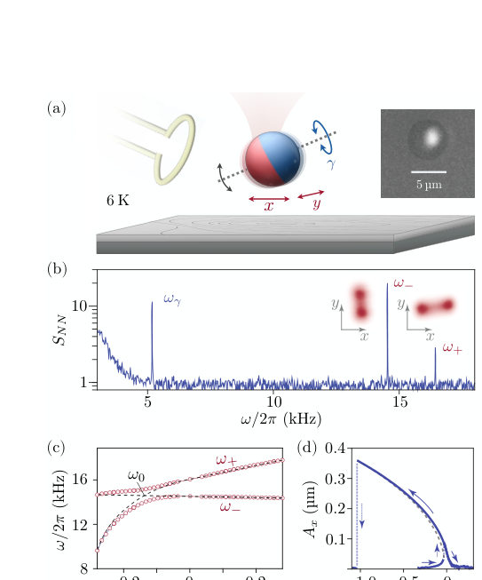
<figcaption class="paper-figure-caption"><b>Fig 1.</b> Figure 1. (a) Schematic of the experimental setup. A mi- cromagnet is levitated above a YBCO film in a cryostat at 6 K. An in situ coil drives the micromagnet, whose motion is detected using a focused laser beam. Inset: Optical image of the levitated micromagnet under broadband LED illumina- tion. (b) Undriven photon-count-rate spectrum. From low to high frequencies, the peaks correspond to the γ mode and the predominantly y-like and x-like hybrid modes. Insets: Spa- tial scans of the driven x- and y-like modes. (c) Measured hybridized eigenfrequencies ω+ and ω−as functions of Bext. The dashed black curves show the inferred uncoupled frequen- cies ωx and ωy, which cross at the common...</figcaption>
</figure>
<figure class="paper-figure-card">
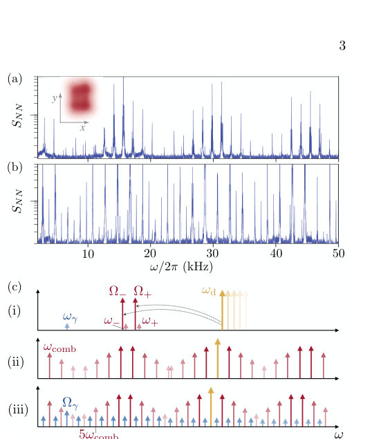
<figcaption class="paper-figure-caption"><b>Fig 2.</b> Figure 2. (a) Photon-count-rate spectrum under an 8 dBm drive. Inset: spatial scan of driven motion. (b) Photon-count- rate spectrum for the same drive power at ωd/2π = 30.06 kHz during the downward sweep in Fig. 3. (c) Schematic illus- tration of the mechanical frequency comb formation process: (i) off-resonant driving evolving into parametric excitation of the carrier frequencies as ωd is decreased, (ii) parametric driv- ing and cascaded sideband generation resulting in the primary comb, (iii) γ-mode excitation and full-comb formation.</figcaption>
</figure>
<figure class="paper-figure-card">
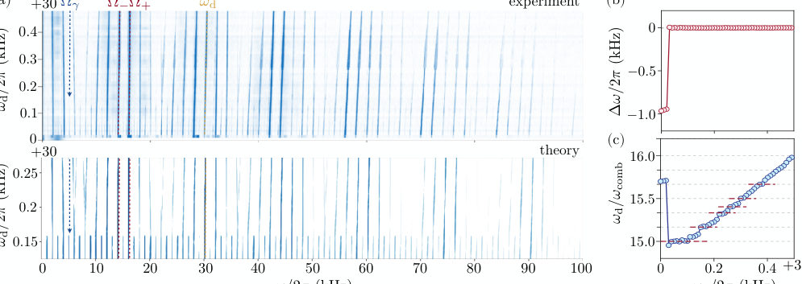
<figcaption class="paper-figure-caption"><b>Fig 3.</b> Figure 3. (a) Upper panel: measured photon-count spectra during the downward sweep of the drive frequency ωd. Dashed lines indicate the γ mode with effective frequency Ωγ (blue), the predominantly y-like (red) and x-like (red) carrier tones, and the drive (yellow). Lower panel: simulated sweep spectrum obtained from the extended nonlinear model in Eqs. (1) and (4), showing qualitative agreement with the experimental data. Phenomenological simulation parameters are detailed in SI [1]. (b) Measured frequency mismatch ∆ω = ωd −(Ω+ + Ω−) versus ωd throughout the frequency sweep. (c) Corresponding ratio ωd/ωcomb of the drive frequency to the primary-comb spacing versus ωd during the same sweep....</figcaption>
</figure>
<figure class="paper-figure-card">
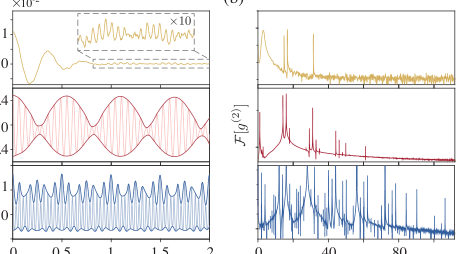
<figcaption class="paper-figure-caption"><b>Fig 4.</b> Figure 4. (a) Second-order correlation functions g(2)(τ) and (b) their corresponding spectra. Panels from top to bottom are representative examples in the frequency sweep shown in Fig. 3(a) in the stages (i) off-resonance driving (yellow), (ii) primary-comb regime (red), and (iii) full-comb regime (blue). Solid lines highlight envelopes of g(2)(τ) in (a). The inset in the top panel of (a) is magnified ×10 vertically for visibility.</figcaption>
</figure>
</div>

<p><strong>Summary.</strong> This research demonstrates that a magnetically levitated micromagnet can act as a highly nonlinear mechanical oscillator capable of generating frequency combs. By tuning the drive frequency, the system exhibits a transition from a simple primary comb to a dense, full comb structure. This establishes the micromagnet as a promising platform for advanced precision sensing and quantum-limited metrology.</p>
<p><strong>Why it may be interesting.</strong> This work provides a concrete, macroscopic realization of nonlinear wave phenomena (frequency combs) in a quantum-relevant, low-dissipation mechanical system, bridging nonlinear dynamics with quantum metrology.</p>
<details>
<summary>Detailed structure</summary>
<p><strong>Main problem.</strong> The paper investigates the generation and characterization of mechanical frequency combs using nonlinear dynamics in a physical system.</p>
<p><strong>Main result.</strong> They successfully demonstrated the generation of a tunable mechanical frequency comb, progressing from a primary comb to a full comb structure through nonlinear parametric excitation and mode coupling.</p>
<p><strong>Method.</strong> The study combines experimental measurements (optical readout, spectrum sweeping) with theoretical modeling (nonlinear coupled oscillators, numerical simulations) to analyze the dynamics.</p>
<p><strong>Model / system.</strong> The platform is a Meissner-levitated micromagnet, whose coupled center-of-mass and rotational motion exhibits strong intrinsic Duffing nonlinearities and low dissipation.</p>
<p><strong>Key observables.</strong> Spectral peaks, comb spacing ($\omega_{	ext{comb}}$), resonance frequencies ($\omega_{\pm}, \omega_{\gamma}$), and the ratio $\omega_d/\omega_{	ext{comb}}$.</p>
<p><strong>Important parameters / regimes.</strong> Low temperature (6 K), vacuum environment, and the external static/driving magnetic fields used for tuning.</p>
<p><strong>Assumptions / limitations.</strong> The analysis relies on sum-phase locking conditions ($\Omega_+ + \Omega_- = \omega_d$) and uses approximations like the rotating-wave approximation in the theoretical sections.</p>
<p><strong>Figures summary.</strong> Figures show the setup, the emergence of the primary comb during a drive frequency sweep, and the evolution through distinct comb states (primary to full comb) in both experimental and simulated spectra.</p>
<p><strong>Paper structure.</strong> The paper progresses from establishing the physical platform and its nonlinear resonances, to demonstrating the primary comb formation, and finally detailing the mechanism leading to the more complex, fully developed comb structure via coupling to a librational mode.</p>
</details>
<details>
<summary>Abstract</summary>
<p>Nonlinearities in multimode mechanical systems can give rise to rich dynamical phenomena with great potential for sensing applications and for future quantum experiments. We demonstrate that the coupled center-of-mass and rotational motion of a Meissner-levitated micromagnet offer a promising platform for nonlinear dynamics, combining low dissipation, magnetic tunability, strong intrinsic Duffing nonlinearities, and nonlinear intermodal couplings. We use this tunability to demonstrate the generation of a mechanical frequency comb in the micromagnet dynamics, realized by parametric excitation of two translational modes followed by cascaded nonlinear frequency mixing, which produces a phononic comb with tunable spacing. At large amplitudes, nonlinear coupling to a low-frequency librational mode of the magnet leads to parametric excitation and phase locking of that mode, generating a dense spectral fine structure at subharmonics of the drive. These results establish levitated micromagnets as a platform for nonlinear multimode mechanics, with potential applications in precision sensing and quantum-limited metrology.</p>
</details>
<p><sub><a href="#top">↑ back to top</a></sub></p>

<p><a id="paper-2609.11741"></a></p>
<h3 id="quantum-transport-along-a-tight-binding-chain-connected-to-markovian-reservoirs"><a href="http://arxiv.org/abs/2609.11741v1">Quantum transport along a tight-binding chain connected to Markovian reservoirs</a></h3>
<p><strong>Authors:</strong> P. S. Muraev, A. R. Kolovsky, D. N. Maksimov<br>
<strong>Type:</strong> theory · <strong>Category:</strong> statistical mechanics · <strong>PDF:</strong> <a href="https://arxiv.org/pdf/2609.11741v1">https://arxiv.org/pdf/2609.11741v1</a><br>
<strong>Analysis basis:</strong> full PDF text, analyzed in chunks
<strong>Topic relevance:</strong> 🔥 <code>Full counting statistics</code> <strong>4/5</strong> · <code>methods for driven-dissipative</code> <strong>3/5</strong> · <code>Keldysh / 2PI / non-Gaussian methods</code> <strong>2/5</strong> · <code>driven-dissipative phase transition</code> <strong>2/5</strong> · <code>non-equilibrium universality</code> <strong>2/5</strong> · <code>quantum measurements</code> <strong>2/5</strong> · <code>analog quantum simulation</code> <strong>1/5</strong> · <code>correlated / nonlocal dissipation</code> <strong>1/5</strong></p>
<div class="figure-strip-hint">↔ Scroll figures horizontally</div>
<div class="paper-figures-scroll">
<figure class="paper-figure-card">
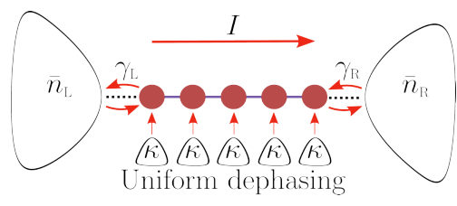
<figcaption class="paper-figure-caption"><b>Fig 1.</b> FIG. 1. Particle transport through a tight-binding chain cou- pled to Markovian reservoirs. The current I flows from the left to the right driven by the mean particle density imbalance ¯nL −¯nR. Relaxation rates γL and γR correspond to the par- ticle exchange rates between each reservoir and the coupled site of the chain.</figcaption>
</figure>
<figure class="paper-figure-card">
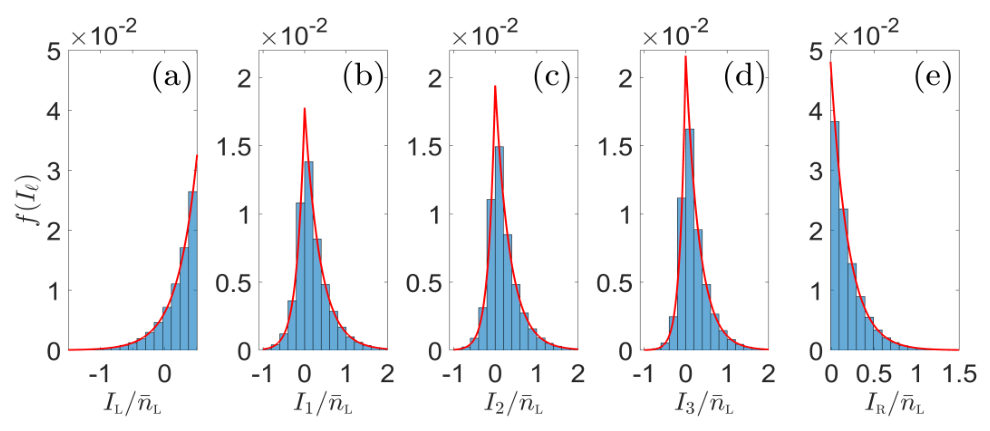
<figcaption class="paper-figure-caption"><b>Fig 2.</b> FIG. 2. Distribution for the dataset generated from the stochastic differential equations (36) – bins, and the analytic distribu- tions Eqs. (31) to (33) – red solid lines. The parameters are ¯nL = 100, ¯nR = 1, γL = γR = 0.5, L = 4 and J = 1. The number of samples is 8800.</figcaption>
</figure>
<figure class="paper-figure-card">
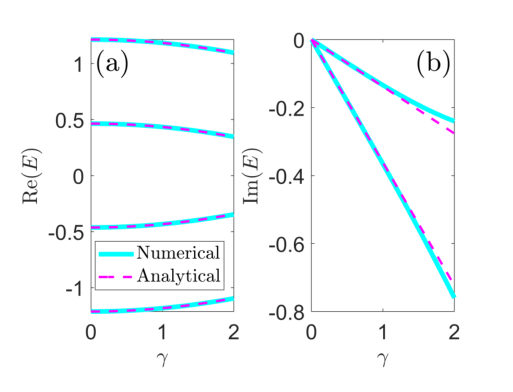
<figcaption class="paper-figure-caption"><b>Fig 3.</b> FIG. 3. Real (a) and imaginary (b) parts of the energy spec- trum of the effective non-Hermitian Hamiltonian for L = 4, J = 1.5 against the dissipation strength γ. Dashed lines rep- resent the perturbative result up to O2(γ/J), see Eq. (C13). The solid lines show the eigenvalues obtained from exact nu- merical diagonalization.</figcaption>
</figure>
</div>

<p><strong>Summary.</strong> This paper provides a comprehensive theoretical treatment of quantum transport in a dephasing open quantum chain. It derives exact analytical expressions for the mean current and site populations using the master equation approach. Crucially, it extends the analysis to calculate the full probability distributions and correlation functions of the currents, characterizing the transition from ballistic to diffusive transport.</p>
<p><strong>Why it may be interesting.</strong> This work provides rigorous, analytical tools to calculate non-equilibrium transport statistics (current fluctuations) in open quantum systems, bridging the gap between mean-field descriptions and full quantum noise analysis.</p>
<details>
<summary>Detailed structure</summary>
<p><strong>Main problem.</strong> The paper investigates quantum transport of non-interacting particles through a tight-binding chain coupled to external reservoirs, while accounting for on-site dephasing.</p>
<p><strong>Main result.</strong> Exact analytic solutions are derived for the mean current and site populations, and the probability distributions for both boundary and inter-site currents are determined.</p>
<p><strong>Method.</strong> The analysis employs the master-equation approach, solving for the Single-Particle Density Matrix (SPDM) and utilizing the phase-space formalism via characteristic functions to calculate higher-order current statistics.</p>
<p><strong>Model / system.</strong> The system is a tight-binding chain of length L, described by a Hamiltonian coupled to Markovian reservoirs at its ends. The dynamics are governed by a Lindblad master equation incorporating particle exchange and uniform on-site dephasing.</p>
<p><strong>Key observables.</strong> Mean current ($ar{I}_\ell$), site populations ($\langle \hat{n}_\ell 
angle$), and the probability distribution functions $f(I)$ for currents at boundaries and internal bonds.</p>
<p><strong>Important parameters / regimes.</strong> Dephasing rate ($\kappa$), coupling rates ($\gamma_L, \gamma_R$), and system length ($L$). The analysis covers regimes from ballistic ($\kappa=0$) to diffusive ($\kappa 
eq 0$) transport.</p>
<p><strong>Assumptions / limitations.</strong> The analysis is restricted to non-interacting particles (bosons/fermions). For higher-order statistics, the quasi-free limit ($\kappa=0$) is often assumed, and the SPDM approach is used for mean values.</p>
<p><strong>Figures summary.</strong> Figure 1 illustrates particle transport driven by reservoir differences. Figure 2 compares simulated current distributions with analytic predictions. Figure 3 compares the energy spectrum obtained by diagonalization versus perturbative expansion.</p>
<p><strong>Paper structure.</strong> The paper systematically derives the evolution equation for the SPDM, solves for the steady-state mean currents, and then extends the formalism using characteristic functions to derive the full probability distributions and correlation functions for the currents.</p>
</details>
<details>
<summary>Abstract</summary>
<p>We consider quantum transport of non-interacting particles in a tight-binding chain coupled to Markovian reservoirs at its boundaries and subject to uniform on-site dephasing. Using the masterequation approach, we derived the exact analytic solution for the mean current along the chain. This analytic solution is obtained in the framework of single-particle quantum mechanics and, thus, equally applies for transport of non-interacting bosons and fermions. In the absence of phase damping, the results are extended to the complete many-body solution for bosonic problem in the form of anti-normally ordered characteristic function. This function allows us to calculate the distribution function for the current at each bond in the chain as well as the inter-bond current correlation functions.</p>
</details>
<p><sub><a href="#top">↑ back to top</a></sub></p>

<p><a id="paper-2609.11595"></a></p>
<h3 id="dissipative-quantum-battery-from-many-body-scars"><a href="http://arxiv.org/abs/2609.11595v1">Dissipative Quantum Battery from Many-Body Scars</a></h3>
<p><strong>Authors:</strong> Jinglin Liu, Yiming Liu, Mingdi Xu, Lei Pan<br>
<strong>Type:</strong> theory · <strong>Category:</strong> statistical mechanics · <strong>PDF:</strong> <a href="https://arxiv.org/pdf/2609.11595v1">https://arxiv.org/pdf/2609.11595v1</a><br>
<strong>Analysis basis:</strong> full PDF text, analyzed in chunks
<strong>Topic relevance:</strong> 🔥 <code>scars &amp; prethermalization</code> <strong>4/5</strong> · <code>driven-dissipative phase transition</code> <strong>3/5</strong> · <code>methods for driven-dissipative</code> <strong>3/5</strong> · <code>non-equilibrium universality</code> <strong>2/5</strong> · <code>Keldysh / 2PI / non-Gaussian methods</code> <strong>1/5</strong> · <code>analog quantum simulation</code> <strong>1/5</strong> · <code>correlated / nonlocal dissipation</code> <strong>1/5</strong> · <code>quantum measurements</code> <strong>1/5</strong></p>
<div class="figure-strip-hint">↔ Scroll figures horizontally</div>
<div class="paper-figures-scroll">
<figure class="paper-figure-card">
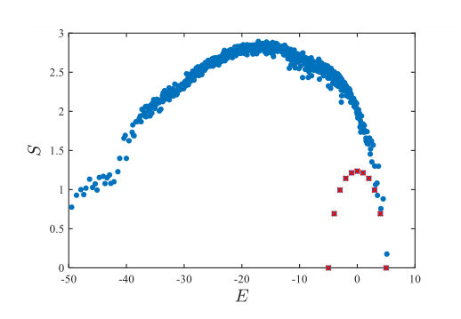
<figcaption class="paper-figure-caption"><b>Fig 1.</b> FIG. 1. Exact-scar structure in the toy model. (a) Bipartite entanglement entropy S versus energy E for L = 10 and Ω= 1. Red crosses mark the exact scar tower, whose entanglement is anomalously low relative to nearby thermal eigenstates. The random couplings are Jαβ j−1,j+2 = Jrndξαβ j−1,j+2 with indepen- dent ξ ∼N(0, 1) and Jrnd = 1. (b) Fidelity dynamics from | ⇑⟩= |S = L/2, Sz = L/2⟩under the Hamiltonian and ideal bond dissipation. The exact revivals have period 2π/Ωand follow F(t) = [cos(Ωt/2)]2L; the inset shows the corresponding oscillation of ⟨σz(t)⟩.</figcaption>
</figure>
<figure class="paper-figure-card">
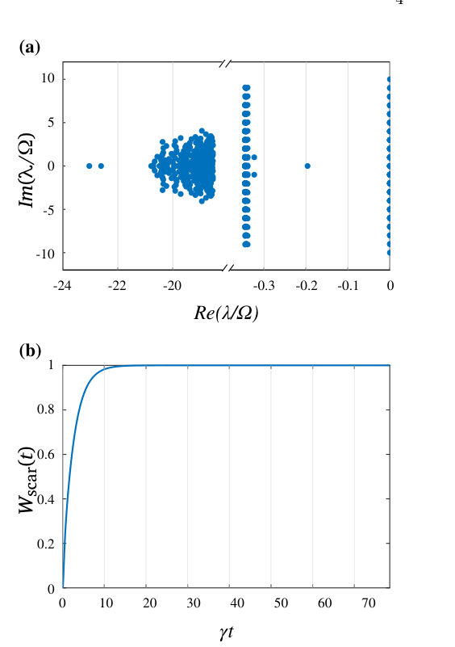
<figcaption class="paper-figure-caption"><b>Fig 2.</b> FIG. 2. Dissipative stabilization and population transfer into the quantum many-body scar subspace of the toy model. (a) Complex Liouvillian spectrum for the toy model sub- ject to the engineered bond dissipation defined in Eq. (8). The zero-eigenvalue modes include the scar-state projec- tors ρ(n) ss = |Sn⟩⟨Sn|, while the off-diagonal scar operators |Sm⟩⟨Sn| generate a ladder of purely imaginary eigenvalues λmn = i(En −Em) = iΩ(n −m). These stationary and purely imaginary modes are separated from the decaying bulk modes with Re λ &lt; 0, demonstrating that the scar-supported operator subspace is protected from the engineered dissipa- tive decay. (b) Time evolution of the total density-matrix...</figcaption>
</figure>
<figure class="paper-figure-card">
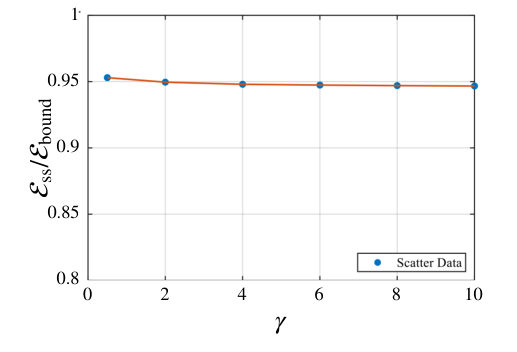
<figcaption class="paper-figure-caption"><b>Fig 3.</b> FIG. 3. Toy-model battery performance. (a) Normalized ergotropy E(t)/Ess from the passive ground state under the engineered bond dissipation and a weak stabilizing dephasing γch z = 0.02. This auxiliary dephasing is included from the outset of the charging stage to regularize the degenerate scar- supported asymptotic dynamics. Because [H, σz j ] ̸= 0, it can modify both coherences and transient energy redistribution; we therefore regard it as an auxiliary stabilization channel rather than an energetically neutral damping process. The ergotropy nevertheless approaches a stable asymptotic value with only weak residual oscillations. (b) Ratio Ess/Ebound versus engineered dissipation strength...</figcaption>
</figure>
<figure class="paper-figure-card">
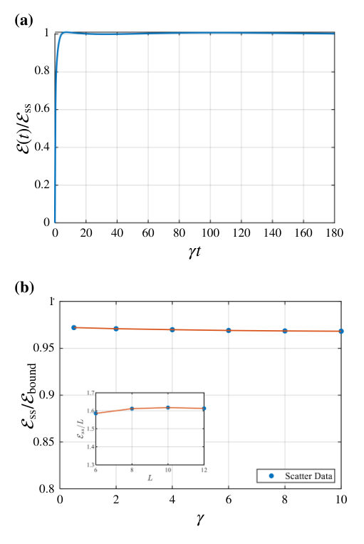
<figcaption class="paper-figure-caption"><b>Fig 4.</b> FIG. 5. Charging performance of the generalized J1–J2 battery. (a) Normalized ergotropy E(t)/Ess starting from the passive state ρp defined in Eq. (16). Since ρp is passive, E(0) = 0, and the growth of E(t)/Ess directly quantifies the charging process. The ergotropy rapidly approaches its asymptotic charged value with only small residual oscillations. (b) Ratio Ess/Ebound versus engineered dissipation strength γ; the ratio remains close to 0.97 throughout the plotted range. The inset shows the ergotropy density Ess/L versus L at fixed γ, which is nearly size independent for the accessible sizes. Parameters are J1 = 2.5, J2 = −0.2, D = 0.2, hz = 0.1, and L = 12 with periodic boundary...</figcaption>
</figure>
<figure class="paper-figure-card">
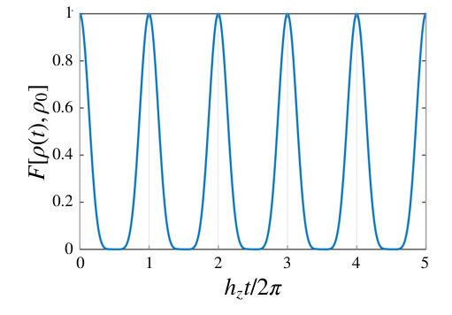
<figcaption class="paper-figure-caption"><b>Fig 5.</b> FIG. 4. Dissipative scar selection in the generalized J1–J2 model. (a) Stationary-state populations in the Hamiltonian eigenbasis, resolved by the conserved magnetization sectors {N↑, N↓}. The dominant weight is concentrated on the high- energy scar eigenstates, with negligible population on the plotted thermal states. (b) Fidelity dynamics from |ϕ0⟩= | →⟩⊗L under the Hamiltonian and ideal bond dissipation. The nondecaying periodic revivals diagnose coherent evolution within the scar-supported manifold. Parameters are as in Fig. 5, with L = 12.</figcaption>
</figure>
</div>

<p><strong>Summary.</strong> This paper introduces a novel quantum battery protocol that utilizes quantum many-body scars (QMBS) for robust energy storage. By engineering local bond dissipation, the system is driven into a high-energy, scar-supported manifold that stores significant extractable work. The findings establish that these non-thermal scar structures are key to achieving efficient, autonomous quantum energy storage.</p>
<p><strong>Why it may be interesting.</strong> This work directly bridges concepts from open quantum systems, non-equilibrium thermodynamics, and many-body physics, showing how engineered dissipation can harness specific quantum structures (scars) for energy storage.</p>
<details>
<summary>Detailed structure</summary>
<p><strong>Main problem.</strong> The paper proposes using quantum many-body scars (QMBS) to create an autonomous, robust quantum battery capable of storing extractable work.</p>
<p><strong>Main result.</strong> Engineered local bond dissipation can drive the system into a high-energy scar-supported manifold, achieving high extractable work close to the thermodynamic bound.</p>
<p><strong>Method.</strong> The study uses open quantum system dynamics, specifically engineered Markovian Lindblad dissipation, to selectively populate non-thermal scar states.</p>
<p><strong>Model / system.</strong> The model involves interacting spin-1/2 chains, starting with a toy model and generalizing to a $J_1-J_2$ spin chain augmented by a Dzyaloshinskii–Moriya interaction (DMI).</p>
<p><strong>Key observables.</strong> Single-copy ergotropy, extractable work, bipartite entanglement entropy, and scar weight retention ($R_{scar}$).</p>
<p><strong>Important parameters / regimes.</strong> Dissipation rates ($\gamma_k$), weak dephasing strength ($p$), and the strength of the scar-breaking perturbation ($\epsilon$).</p>
<p><strong>Assumptions / limitations.</strong> The analysis relies on the Born–Markov and secular approximations, and the work bound comparison is noted to exclude the energy cost of the charger.</p>
<p><strong>Figures summary.</strong> Figures illustrate the low entanglement entropy of scar states, fidelity revivals under dissipation, the rise of scar weight, and the approach of ergotropy towards the work bound.</p>
<p><strong>Paper structure.</strong> The paper progresses from defining the problem and the toy model to applying engineered dissipation to charge the scar manifold, demonstrating stability via weak dephasing, and finally confirming the necessity of the scar structure by showing performance loss upon perturbation.</p>
</details>
<details>
<summary>Abstract</summary>
<p>We propose an autonomous quantum-battery protocol based on dissipatively selected quantum many-body scars. Using an embedding-type spin chain with an exact scar tower and a generalized interacting $J_1$--$J_2$ chain, we show that engineered local bond dissipation can drive the system from a passive state into a high-energy scar-supported manifold with large extractable work. The resulting charged states exhibit single-copy ergotropy close to the entropy-matched thermodynamic work bound while retaining the coherent structure associated with the scar ladder. Because the ideal scar manifold also supports nondecaying peripheral modes, we introduce weak local dephasing to obtain a stable charging protocol and find a broad regime in which the charging time is reduced without substantially degrading the stored work. Finally, an explicit scar-breaking perturbation produces a correlated loss of scar support and extractable work, demonstrating that the favorable battery performance is tied to the nonthermal scar structure rather than merely to the preparation of a generic excited state. Our results establish dissipatively stabilized many-body scars as a promising resource for autonomous and robust quantum energy storage.</p>
</details>
<p><sub><a href="#top">↑ back to top</a></sub></p>

<p><a id="paper-2609.11922"></a></p>
<h3 id="a-chip-scale-space-time-multiplexed-gaussian-boson-sampling-processor-beyond-10000-photons"><a href="http://arxiv.org/abs/2609.11922v1">A Chip-scale Space-time Multiplexed Gaussian Boson Sampling Processor Beyond 10,000 Photons</a></h3>
<p><strong>Authors:</strong> Yu-Xuan Fu, He-Yu Shen, Ke-Ming Hu, Jun-Jie He, Yun-Long Nie, Hang Song, Bao-Jing Liu, Le-Si Yang, Xiao-Yu Wu, Pei-Lin Du, Yu-Ze Zhu, Yi Xie, De-Hui Huang, Yu-Fei Liu, Hai Yan, Jin-Hong Chen, Yu-Lin Yu, Chuan-Yan Peng, Wen-Hao Zhou, Feng Lu, Yu-Quan Peng, Chen-Shuo Xia, Zhi-Chao Wang, Zhe-Han Li, Lin Chen, Chao-Yang Zhang, Chun-Yan Jin, Yan-Rong Zong, Xiao-Yun Xu, Jian-Peng Dou, Xiao-Tian Fang, Pei-Qi Zhou, Hao Tang, Chang-Shun Wang, Lin Yang, Xian-Min Jin<br>
<strong>Type:</strong> both · <strong>Category:</strong> quantum information and computing · <strong>PDF:</strong> <a href="https://arxiv.org/pdf/2609.11922v1">https://arxiv.org/pdf/2609.11922v1</a><br>
<strong>Analysis basis:</strong> full PDF text, analyzed in chunks
<strong>Topic relevance:</strong> 🔥 <code>analog quantum simulation</code> <strong>4/5</strong> · <code>QC/QI experiment</code> <strong>3/5</strong> · <code>quantum optics experiment</code> <strong>3/5</strong> · <code>interference shaping light</code> <strong>2/5</strong></p>
<div class="figure-strip-hint">↔ Scroll figures horizontally</div>
<div class="paper-figures-scroll">
<figure class="paper-figure-card">
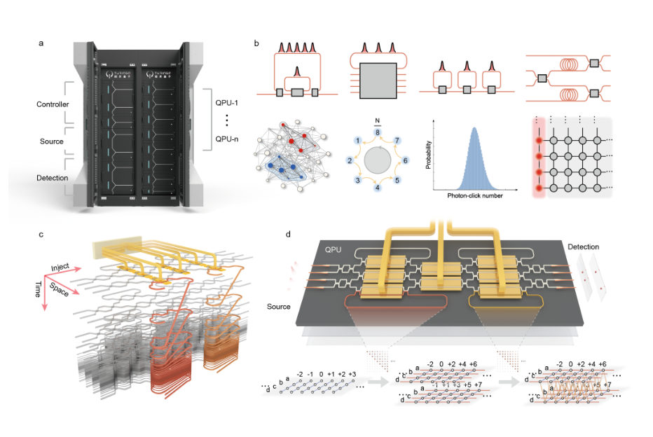
<figcaption class="paper-figure-caption"><b>Fig 1.</b> Fig. 1. Schematic diagram of the chip-scale space-time multiplexed GBS system Zhiyuan 3.0. a The complete system is comprised of the control module, quantum source, quantum processing unit (QPU) and the detection module. b Top: representative time-domain multiplex- ing proposals spanning delay-loop and unbalanced delay-line architectures. The four panels, from left to right, show the nested delay-loop firstly proposed in [16], loop-back [10], cas- caded delay-loop [11], and unbalanced delay-line structures [19, 20], respectively. The time- domain multiplexing idea was first proposed in [16]. Bottom: GBS-related problems among quantum advantage demonstrations, graph problems and...</figcaption>
</figure>
<figure class="paper-figure-card">
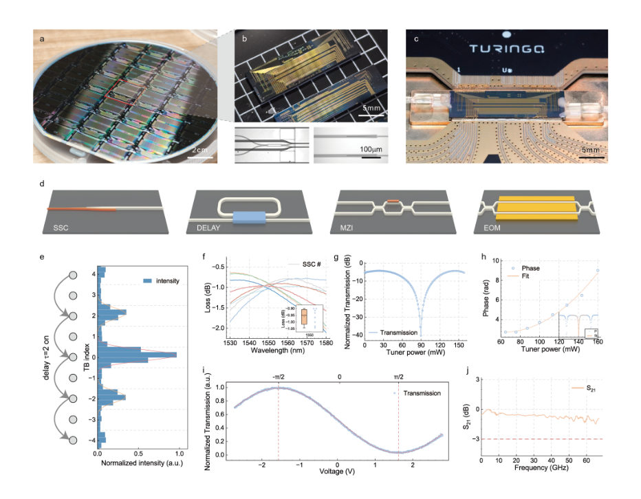
<figcaption class="paper-figure-caption"><b>Fig 2.</b> Fig. 2. Chip fabrication and characterization. a-c Layout of the lithium niobate-based TDM- GBS chip. Thin-film lithium niobate wafer (a), fabricated chip (b), and packaged system module (c). d Illustrations of the key devices: dual-layer spot-size converter (SSC), delay loop, thermo- optic MZI, and the high-speed electro-optic modulator (EOM). e-j Device characterization. e The system operates at a 4-GHz clock rate; the 250-ps time-bin windows can be clearly divided on the time axis. The red line shows the fit of the time-of-arrival and the gray dashed lines mark the time-bin windows. f Transmission spectra of multiple SSCs measured over 1530-1580 nm. The inset shows the loss distribution...</figcaption>
</figure>
<figure class="paper-figure-card">
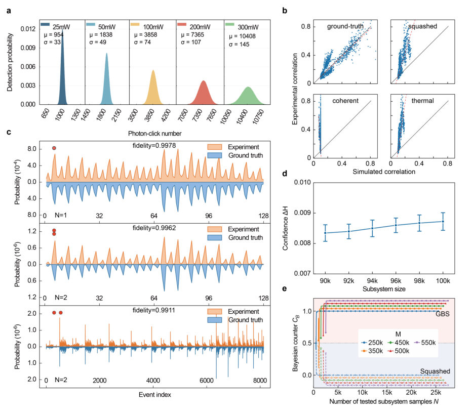
<figcaption class="paper-figure-caption"><b>Fig 3.</b> Fig. 3. Experimental results and validation of the GBS device. a Normalized probability distributions of the photon-click number for five pump powers. At the highest pump power, the largest photon-click number exceeds 10,000. b-c Small-scale GBS validation. b Simulation- experiment comparison of second-order correlation functions under four hypotheses with the same first-order moments, confirming that the photon statistics of the experimental output agree with the GBS ground truth. c Per-configuration comparison between experimental and the- oretical probabilities in the few-photon subspace, with single photon, two-photon bunching, and two-photon non-bunching fidelities 0.9978, 0.9962, and...</figcaption>
</figure>
<figure class="paper-figure-card">
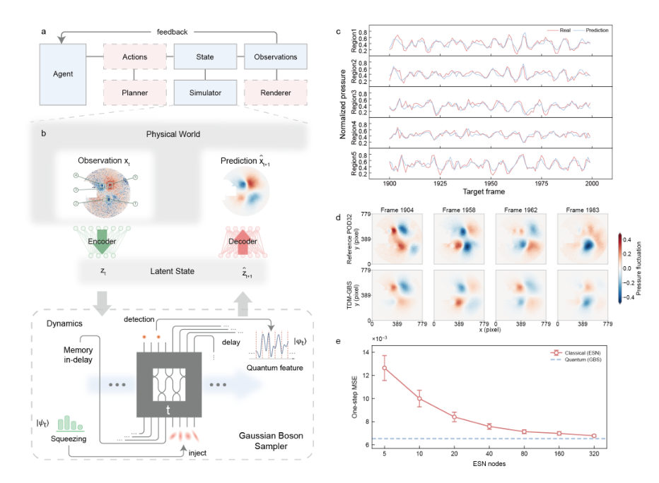
<figcaption class="paper-figure-caption"><b>Fig 4.</b> Fig. 4. GBS-powered world model. a Functional taxonomy of world models–Planner, Simu- lator, and Renderer–with our system falling into the Simulator category. b Closed-loop frame- work of the GBS-powered world model: Physical World →Observation →Encoder →GBS Dynamics model and Memory →Decoder →future-state Prediction, with GBS serving as the dynamics engine in the loop. c Comparison between the latent-variable evolution of the true vortex street (red) and the GBS prediction (blue). d Representative flow-field reconstruction: the top row shows the original vortex-street flow field and the bottom row the flow field recon- structed from GBS-powered world model predictions. e Prediction errors...</figcaption>
</figure>
</div>

<p><strong>Summary.</strong> This paper presents a breakthrough chip-scale processor for Gaussian Boson Sampling (GBS) using a space-time multiplexed architecture on lithium niobate. It not only achieves high photon counts (&gt;10,000) but also proves the system's versatility by reconfiguring it to model complex physical dynamics with quantum advantage over classical neural network benchmarks.</p>
<p><strong>Why it may be interesting.</strong> This work directly tackles the engineering challenge of scaling photonic quantum computation by integrating complex components onto a single chip, moving GBS from a proof-of-concept experiment toward a programmable quantum hardware platform.</p>
<details>
<summary>Detailed structure</summary>
<p><strong>Main problem.</strong> The paper addresses the practical barriers—such as alignment issues and limited programmability—that hinder the scalable deployment of Gaussian Boson Sampling (GBS) for quantum advantage demonstrations.</p>
<p><strong>Main result.</strong> They report the first chip-scale space-time multiplexed GBS system capable of handling over 10,000 photons, and demonstrate its versatility by using it as a quantum-enhanced world model for physical dynamics prediction.</p>
<p><strong>Method.</strong> The authors utilize a monolithic, space-time multiplexed architecture on a thin-film lithium niobate chip, combining high-speed electro-optic modulators and delay lines to generate and process large-scale GBS states.</p>
<p><strong>Model / system.</strong> The physical platform is a chip-scale GBS processor built on TFLN, integrating modulators and interferometers. This system is then reconfigured to act as a quantum dynamics engine (world model) for simulating physical systems like Kármán vortex streets.</p>
<p><strong>Key observables.</strong> Detection events up to 11,059 photons within 1 ms; low prediction error (MSE) compared to classical benchmarks; high photon correlation function fidelity matching GBS theory.</p>
<p><strong>Important parameters / regimes.</strong> 4-GHz clock rate; 3-dB bandwidth &gt; 67 GHz; photon count &gt; 10,000; low loss (e.g., 0.9 dB/facet).</p>
<p><strong>Assumptions / limitations.</strong> The feasibility relies on establishing a complete wafer-scale lithium niobate photonic chip pilot line to meet stringent loss and precision requirements.</p>
<p><strong>Figures summary.</strong> Figures illustrate the system setup, device characterization (modulator response, loss), the generation of large-scale cluster states, and comparisons between GBS predictions and classical model predictions for fluid dynamics.</p>
<p><strong>Paper structure.</strong> The paper first details the hardware realization of the space-time multiplexed GBS chip, validates its quantum statistical properties against theory, and finally demonstrates its application by reconfiguring the hardware into a quantum world model for dynamical system prediction.</p>
</details>
<details>
<summary>Abstract</summary>
<p>Gaussian boson sampling (GBS) has emerged as a leading photonic paradigmfor demonstrating quantum computational advantage. Nevertheless, state-ofthe-art GBS setups face practical barriers including stringent optical alignment, phase instability, and limited programmability, which impede scalable engineering deployment. The chip-scale space-time multiplexed architecturepromises to resolve these constraints, yet it strongly demands wafer-scale chipcapabilities to simultaneously satisfy stringent requirements on low loss, highprecision and high-speed modulation. Here we report the first chip-scale spacetime multiplexed GBS system, monolithically integrating high-speed electrooptic modulators, on-chip delay lines, and a time-space multiplexed interferometric network on a thin-film lithium niobate chip, operating at a 4-GHz clockrate with detection events of up to 11,059 photons within 1 millisecond. Beyond benchmarking quantum advantage, we further reconfigure the photonichardware into a GBS-powered world model for modelling physical dynamics,which achieves lower prediction error with fewer trainable readout parameters compared with a classical echo state network (ESN) baseline. Our resultsvalidate the feasibility of our endeavor towards scalable photonic quantumhardware, and pave the way for the versatile programmable applications offuture GBS quantum systems.</p>
</details>
<p><sub><a href="#top">↑ back to top</a></sub></p>

<p><a id="paper-2609.10932"></a></p>
<h3 id="distributed-variational-quantum-computing-with-deterministic-entanglement-tuning"><a href="http://arxiv.org/abs/2609.10932v1">Distributed variational quantum computing with deterministic entanglement tuning</a></h3>
<p><strong>Authors:</strong> Ilhwan Kim, Yong-Su Kim, Kwang Jo Lee, Hyukjoon Kwon, Yosep Kim, Hyang-Tag Lim<br>
<strong>Type:</strong> experiment · <strong>Category:</strong> quantum information and computing · <strong>PDF:</strong> <a href="https://arxiv.org/pdf/2609.10932v1">https://arxiv.org/pdf/2609.10932v1</a><br>
<strong>Analysis basis:</strong> full PDF text, analyzed in chunks
<strong>Topic relevance:</strong> 🔥 <code>QC/QI experiment</code> <strong>4/5</strong> · <code>analog quantum simulation</code> <strong>3/5</strong> · <code>quantum optics experiment</code> <strong>3/5</strong> · <code>interference shaping light</code> <strong>2/5</strong></p>
<div class="figure-strip-hint">↔ Scroll figures horizontally</div>
<div class="paper-figures-scroll">
<figure class="paper-figure-card">
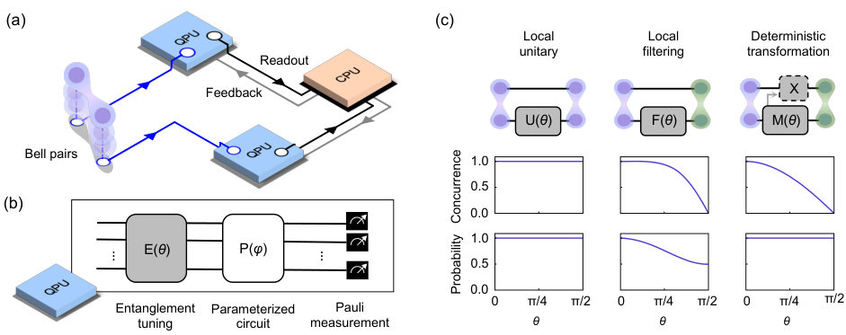
<figcaption class="paper-figure-caption"><b>Fig 1.</b> FIG. 1. DVQC protocol schematic and entanglement tuning. (a) Maximally entangled photon pairs are distributed to two distant QPUs, where local operations and measurements are performed. The readout results are sent to a classical processing unit (CPU), which optimizes circuit parameters and sends updated values back to the QPUs. This feedback loop iteratively refines the quantum state toward the solution. (b) Each QPU applies an entanglement tuning operation E(θ), followed by a parameterized quantum circuit P(φ) for state preparation and Pauli measurements. The parameters θ and φ are updated via classical feedback. (c) Concurrence and success probability for three operations applied to the...</figcaption>
</figure>
<figure class="paper-figure-card">
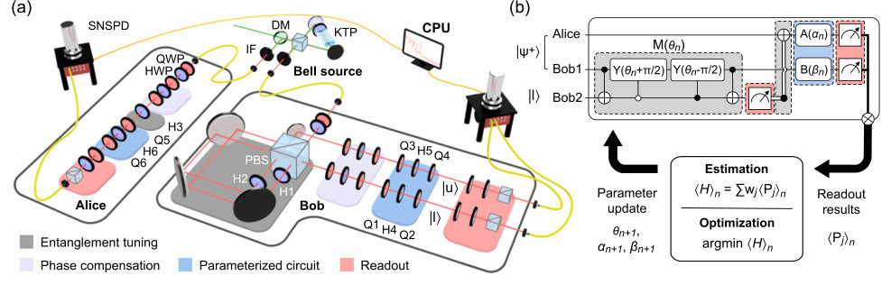
<figcaption class="paper-figure-caption"><b>Fig 2.</b> FIG. 2. Implementation of DVQC protocol. (a) Experimental setup. A polarization-entangled photon pair is generated and distributed to two remote QPUs, labeled Alice and Bob. Bob performs deterministic entanglement tuning using a displaced Sagnac interferometer, which encodes a path-mode ancilla qubit. The positive operator-valued measurement (POVM) M(θ) in Eq. (5) is implemented by rotating H1 and H2. Depending on whether Bob’s photon is detected in path mode |u⟩or |l⟩, a conditional Pauli-X gate is applied to Alice’s photon via H3. After phase compensation, parameterized local circuits are applied on both sides, followed by measurements in the Pauli basis. Detection outcomes are sent to a...</figcaption>
</figure>
<figure class="paper-figure-card">
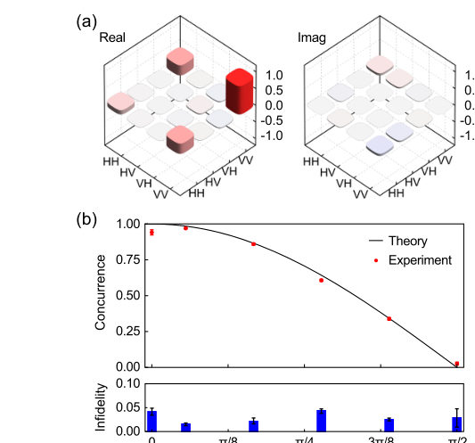
<figcaption class="paper-figure-caption"><b>Fig 3.</b> FIG. 3. Experimental results of entanglement tuning. (a) Experimentally reconstructed density matrix of a partially entangled state prepared by applying the deterministic trans- formation in Eq. (6) to a Bell state, with θ = 5π/18. (b) Con- currence and state infidelity of the output states as a function of θ. Red dots represent experimental data, and the black curve indicates the theoretical prediction. Error bars denote statistical uncertainties estimated via Monte Carlo sampling based on Poissonian photon count distributions.</figcaption>
</figure>
<figure class="paper-figure-card">
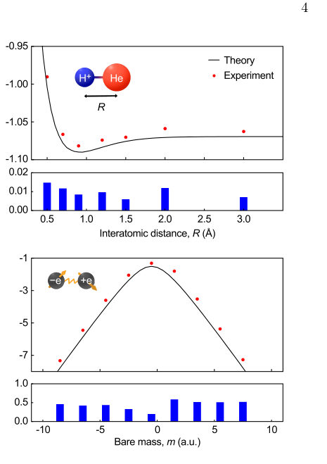
<figcaption class="paper-figure-caption"><b>Fig 4.</b> FIG. 4. Experimental results of distributed variational quan- tum eigensolver (DVQE). Ground-state energy estimation for (a) the He-H+ molecular system as a function of interatomic distance R, and (b) the two-qubit Schwinger model as a func- tion of the bare mass m of the electron and positron. In both cases, the DVQE protocol was implemented with classical op- timization over variational parameters, including both local circuit rotations and entanglement tuning. For each value of R and m, the experiment was repeated 3 times, typically converging within 50 iterations. The lowest energy results are shown as red circles, while black curves denote exact the- oretical predictions. Lower panels...</figcaption>
</figure>
</div>

<p><strong>Summary.</strong> This work presents a novel, deterministic protocol for tuning entanglement in distributed quantum computing using photonic qubits. By replacing probabilistic filtering with a LOCC-based measurement operation, the authors enable precise control over the quantum resource. This method is experimentally validated by accurately estimating the ground-state energies of complex molecular and lattice models.</p>
<p><strong>Why it may be interesting.</strong> It provides a concrete, hardware-validated method for resource management in distributed quantum computation, which is crucial for scaling up quantum simulations beyond single nodes.</p>
<details>
<summary>Detailed structure</summary>
<p><strong>Main problem.</strong> The paper addresses the challenge of creating a scalable and practical protocol for distributed variational quantum computing (DVQC) that avoids the high overhead of full gate teleportation.</p>
<p><strong>Main result.</strong> A deterministic entanglement tuning protocol was successfully demonstrated, allowing the engineering of specific entanglement levels required by the problem, and this was validated by estimating ground-state energies for benchmark Hamiltonians.</p>
<p><strong>Method.</strong> The protocol uses deterministic entanglement tuning, which modulates pre-shared entanglement using only local operations and classical communication (LOCC), avoiding probabilistic postselection.</p>
<p><strong>Model / system.</strong> The experiment is performed on a photonic DVQC setup using polarization-entangled photon pairs distributed to two spatially separated nodes (Alice and Bob). The tuning mechanism involves a displaced Sagnac interferometer.</p>
<p><strong>Key observables.</strong> Concurrence (to quantify entanglement), Success Probability, and the estimated ground-state energies ($\langle H 
angle$) for the He-H+ molecule and the Schwinger model.</p>
<p><strong>Important parameters / regimes.</strong> The tuning parameter $  heta$ controls the degree of entanglement, and the results are benchmarked against theoretical predictions for molecular and lattice Hamiltonians.</p>
<p><strong>Assumptions / limitations.</strong> The protocol assumes starting with a sufficiently entangled resource (Bell pairs) and notes that the current implementation requires offline correction for feed-forward.</p>
<p><strong>Figures summary.</strong> Figures illustrate the DVQC protocol schematic, the experimental linear-optical setup, and show the measured concurrence and energy estimates for the benchmark problems.</p>
<p><strong>Paper structure.</strong> The paper introduces the limitations of current DVQC methods, proposes the deterministic entanglement tuning protocol, details its implementation using photonic hardware, and validates the approach by applying it to estimate ground-state energies of molecular and lattice Hamiltonians.</p>
</details>
<details>
<summary>Abstract</summary>
<p>Distributed quantum computing offers a scalable route to quantum information processing by entangling spatially separated processors. Although gate teleportation enables universal computation across distributed nodes, it requires repeated consumption of high-fidelity Bell pairs, ancillary qubits, and real-time feedforward, which imposes significant overhead and reduces fidelity. However, many variational quantum algorithms do not demand full universality; rather, they rely on sufficient expressibility to explore solution spaces effectively. Building on this, we propose a distributed variational quantum computing protocol based on deterministic entanglement tuning. In contrast to probabilistic filtering, our approach deterministically modulates pre-shared entanglement using only local operations and classical communication. We validate the protocol through a proof-of-principle experiment by estimating ground-state energies of the He-H$^+$ molecule and the Schwinger model, showing that diverse entanglement levels can be engineered to match problem-specific requirements. Our results suggest a practical alternative for near-term distributed quantum applications.</p>
</details>
<p><sub><a href="#top">↑ back to top</a></sub></p>

<p><a id="paper-2609.11159"></a></p>
<h3 id="finite-blockade-dynamics-of-a-three-qubit-ccz-gate-in-neutral-atom-arrays"><a href="http://arxiv.org/abs/2609.11159v1">Finite-blockade dynamics of a three-qubit ccz gate in neutral-atom arrays</a></h3>
<p><strong>Authors:</strong> Paramjeet Banger, Ajay Wasan<br>
<strong>Type:</strong> theory · <strong>Category:</strong> other · <strong>PDF:</strong> <a href="https://arxiv.org/pdf/2609.11159v1">https://arxiv.org/pdf/2609.11159v1</a><br>
<strong>Analysis basis:</strong> full PDF text, analyzed in chunks
<strong>Topic relevance:</strong> 🔥 <code>Rydberg arrays</code> <strong>4/5</strong> · <code>QC/QI experiment</code> <strong>2/5</strong> · <code>Keldysh / 2PI / non-Gaussian methods</code> <strong>1/5</strong> · <code>analog quantum simulation</code> <strong>1/5</strong> · <code>correlated / nonlocal dissipation</code> <strong>1/5</strong> · <code>driven-dissipative phase transition</code> <strong>1/5</strong> · <code>methods for driven-dissipative</code> <strong>1/5</strong></p>
<div class="figure-strip-hint">↔ Scroll figures horizontally</div>
<div class="paper-figures-scroll">
<figure class="paper-figure-card">
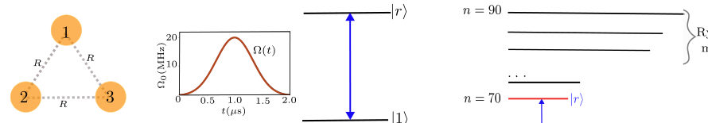
<figcaption class="paper-figure-caption"><b>Fig 1.</b> FIG. 1. (Color online) (a) Geometric repsentation of three-atom system. (b) Gaussian pulse Ω(t) used to drive the Rydberg transition from state |1⟩to |r⟩, with a peak Rabi frequency Ω0. (c) Schematic illustration of the closely spaced rydberg energy levels in the n = 70-90 energy levels.</figcaption>
</figure>
<figure class="paper-figure-card">
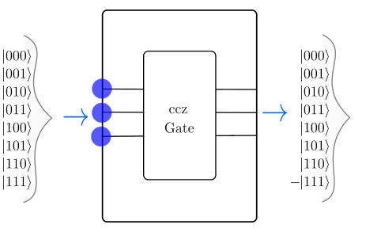
<figcaption class="paper-figure-caption"><b>Fig 2.</b> FIG. 2. (Color online) Schematic representation of a three- atom ccz gate, where the computational basis states undergo a conditional z-phase operation, leaving all states unchanged except |111⟩, which acquires a phase of π.</figcaption>
</figure>
<figure class="paper-figure-card">
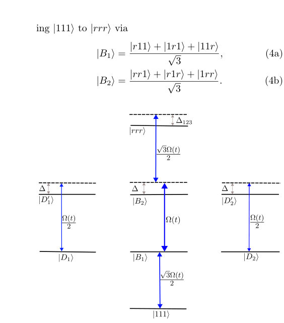
<figcaption class="paper-figure-caption"><b>Fig 3.</b> FIG. 3. (Color online) Symmetry-adapted energy-level dia- gram for three neutral atoms. The global laser field couples the symmetric Dicke ladder |111⟩↔|B1⟩↔|B2⟩↔|rrr⟩, while the dark states remain decoupled. The interaction- induced energy shifts of V and 3V for the doubly and triply excited Rydberg states, respectively, detune these states from the laser resonance, resulting in the Rydberg blockade.</figcaption>
</figure>
<figure class="paper-figure-card">
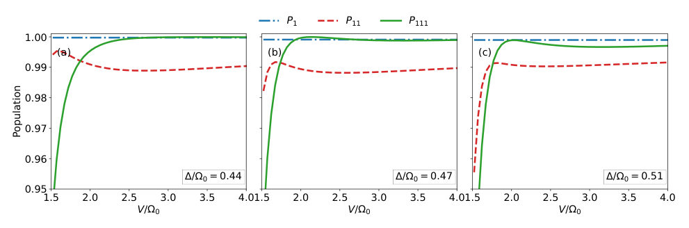
<figcaption class="paper-figure-caption"><b>Fig 4.</b> FIG. 4. (Color online) Final population revial of the computational manifolds P1, P2, and P3 as a function of the interaction strength (V/Ω0), showing improved revival with increasing interaction strength due to reduced finite-blockade leakage.</figcaption>
</figure>
<figure class="paper-figure-card">
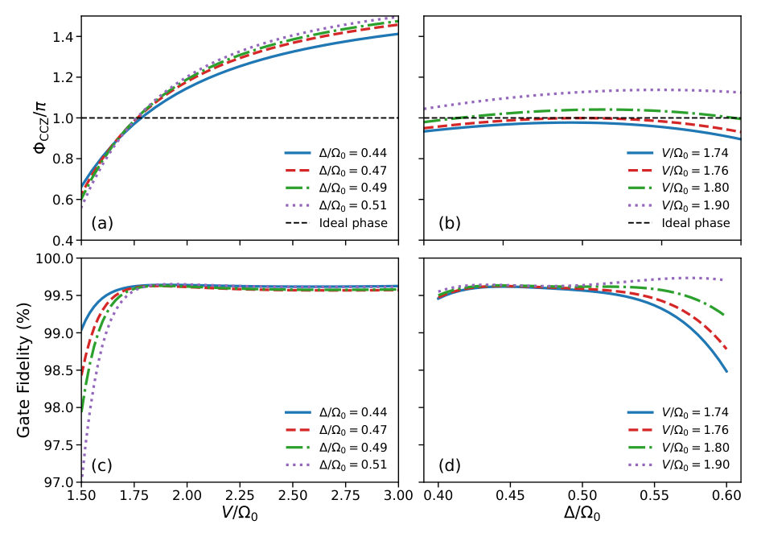
<figcaption class="paper-figure-caption"><b>Fig 5.</b> FIG. 5. (Color online)(b) Three-qubit conditional phase (Θ3/π) versus (V/Ω0) for ∆/Ω0 = 0.44, 0.47, 0.49 and 0.51. The horizontal dashed line denotes the ideal CCZ phase condition, Θ3 = π. (c) Average CCZ gate fidelity as a function of (V/Ω0) for the same detunings. The fidelity increases with interaction strength, with ∆/Ω0 = 0.45 providing the highest fidelity over the range considered.</figcaption>
</figure>
</div>

<p><strong>Summary.</strong> This theoretical study analyzes the implementation of a three-qubit CCZ gate in neutral-atom arrays by modeling finite-blockade dynamics. The authors systematically investigate how imperfections, such as finite blockade effects and Rydberg state decay, degrade gate fidelity. They provide optimal operating regimes and error quantification guidelines for realizing high-fidelity quantum gates.</p>
<p><strong>Why it may be interesting.</strong> This work is highly relevant as it tackles the practical limitations (finite blockade, decay) of implementing multi-qubit gates using neutral atoms, providing concrete guidelines for experimental optimization.</p>
<details>
<summary>Detailed structure</summary>
<p><strong>Main problem.</strong> The study investigates the dynamics of a three-qubit Controlled-Controlled-Z (CCZ) gate implemented using Rydberg blockade in neutral-atom arrays.</p>
<p><strong>Main result.</strong> High-fidelity gate operation is achievable by carefully tuning the interplay between the Rabi frequency, detuning, and blockade strength, while also accounting for population leakage and finite Rydberg-state decay.</p>
<p><strong>Method.</strong> The authors employ a theoretical Hamiltonian approach, utilizing symmetry-adapted bases to reduce computational complexity and analyze the time evolution under both coherent and non-Hermitian (decay) terms.</p>
<p><strong>Model / system.</strong> The system consists of three neutral $^{87}	ext{Rb}$ atoms trapped in optical tweezers, where qubit operations are mediated by Rydberg blockade interactions. The dynamics are modeled by an effective Hamiltonian that includes coupling to non-computational Rydberg states.</p>
<p><strong>Key observables.</strong> Gate fidelity ($F$), population leakage ($P_1, P_{11}, P_{111}$), and the accumulated CCZ phase ($\phi_{	ext{ccz}}$).</p>
<p><strong>Important parameters / regimes.</strong> Rabi frequency ($\Omega(t)$), laser detuning ($\Delta$), Rydberg blockade strength ($V$), and decay rate ($\Gamma$).</p>
<p><strong>Assumptions / limitations.</strong> The analysis systematically moves beyond the ideal strong-blockade limit to the finite-blockade regime, and later incorporates decay using a non-Hermitian Hamiltonian model.</p>
<p><strong>Figures summary.</strong> Figures illustrate the geometric setup and pulse profile, the schematic of the CCZ gate, and plots showing gate error dependence on detuning and interaction strength, including the effect of decay rates.</p>
<p><strong>Paper structure.</strong> The paper progresses from defining the system and the CCZ gate mechanism, to analyzing the dynamics in the finite-blockade regime, and finally incorporating decoherence via non-Hermitian decay terms to quantify error sources.</p>
</details>
<details>
<summary>Abstract</summary>
<p>We present a theoretical study of finite-blockade dynamics in a symmetric three-neutral-atom system, providing a framework for understanding high-fidelity multiqubit quantum operations. The transition from the finite- to the strong-blockade regime is systematically investigated to examine the effects of finite Rydberg blockade. Using a single Gaussian laser pulse, we analyze the complete gate dynamics while explicitly accounting for population leakage into non-computational Rydberg states. By exploiting the permutation symmetry of the system, we construct a symmetry-adapted Hamiltonian that reduces the computational complexity while preserving the exact dynamics. This enables a systematic investigation of the interplay among the Rabi frequency, laser detuning, and Rydberg blockade strength, leading to the identification of optimal operating regimes with high fidelity, fast gate operation, and suppressed leakage. We further quantify the dominant error mechanisms, including phase errors, population leakage, and finite Rydberg-state lifetimes, and evaluate their impact on the gate fidelity. Our results demonstrate experimentally accessible high-fidelity gate operation and provide practical guidelines for multi-qubit quantum computing.</p>
</details>
<p><sub><a href="#top">↑ back to top</a></sub></p>

<p><a id="paper-2609.11513"></a></p>
<h3 id="one-clean-qubit-spectroscopy-of-simulated-kitaev-chains"><a href="http://arxiv.org/abs/2609.11513v1">One-clean-qubit spectroscopy of simulated Kitaev chains</a></h3>
<p><strong>Authors:</strong> Z. M. McIntyre, Daniel Loss<br>
<strong>Type:</strong> both · <strong>Category:</strong> other · <strong>PDF:</strong> <a href="https://arxiv.org/pdf/2609.11513v1">https://arxiv.org/pdf/2609.11513v1</a><br>
<strong>Analysis basis:</strong> full PDF text, analyzed in chunks
<strong>Topic relevance:</strong> 🔥 <code>analog quantum simulation</code> <strong>4/5</strong> · <code>QC/QI experiment</code> <strong>3/5</strong> · <code>quantum measurements</code> <strong>3/5</strong> · <code>methods for driven-dissipative</code> <strong>1/5</strong></p>
<div class="figure-strip-hint">↔ Scroll figures horizontally</div>
<div class="paper-figures-scroll">
<figure class="paper-figure-card">
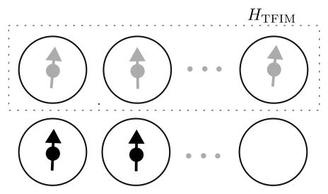
<figcaption class="paper-figure-caption"><b>Fig 1.</b> FIG. 1. Schematic of a 2 × N array of quantum dots. The Hamiltonian HTFIM governs the free (rotating-frame) evo- lution of the N register spins in the top row of the array. The ⌈N/2⌉spins in the bottom row encode a repetition-code qubit. This qubit acts as the control qubit for gates per- formed on the register, which have the effect of toggling the analog-simulation parameters. By initializing the register in a mixed state, the 2N eigenenergies of HTFIM can be extracted from measurements of the control qubit, requiring measure- ments of just one physical spin. Classical postprocessing of the qubit measurement outcomes can then be used to isolate the N single-particle energies of the Kitaev...</figcaption>
</figure>
<figure class="paper-figure-card">
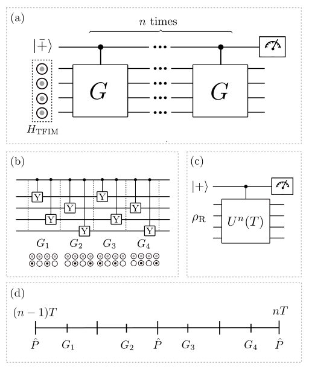
<figcaption class="paper-figure-caption"><b>Fig 2.</b> FIG. 2. (a) Circuit representation of the quantum simula- tion. The register spins evolve freely under HTFIM, with in- formation mapped onto the control qubit through a periodic sequence of two-qubit gates acting on the control qubit and register. (b) Gate sequence comprising the controlled-G gate for N = 4. At each time step tj (j = 1, . . . , 4), CY gates are applied to the N/2 register spins indexed by even or odd integers, with the corresponding charge configurations in the quantum-dot array shown below as filled or empty circles. The gates in each Gj can be applied in parallel due to the repetition encoding used for the control qubit. Gates imple- menting dynamical decoupling of the...</figcaption>
</figure>
<figure class="paper-figure-card">
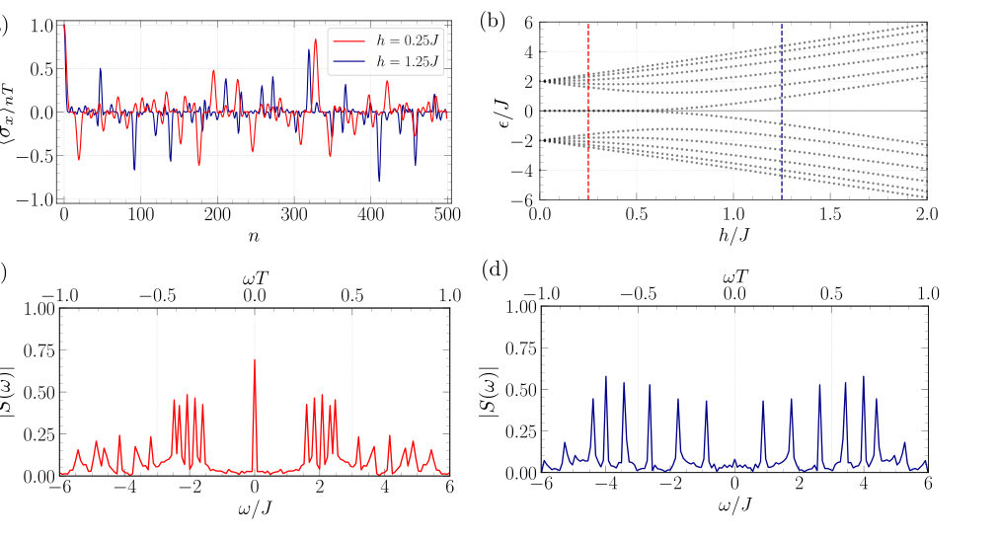
<figcaption class="paper-figure-caption"><b>Fig 3.</b> FIG. 3. Simulations for N = 6: (a) Expectation value of σx at stroboscopic times t = nT for h = 0.25J and h = 1.25J, averaged over 103 noise realizations. The simulations were performed with J = 2π × 50 kHz, T ∗ 2 = 30 µs, and T = 500 ns, corresponding to a total simulation time of Ttot = 250 µs. (b) Single-particle spectrum of the Kitaev chain as a function of h/J, illustrating the splitting of the nearly degenerate ground state as the strength h of the transverse field (equivalently, chemical potential) is increased. The values of h/J used in (c) and (d) are indicated by vertical dashed red and blue lines, respectively. (c) Spectrum |S(ω)| of the postprocessed qubit measurement outcomes...</figcaption>
</figure>
<figure class="paper-figure-card">
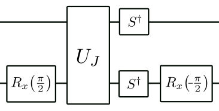
<figcaption class="paper-figure-caption"><b>Fig 4.</b> FIG. 4. Rotating-frame CY gate compiled with hardware- native operations. The entangling gate UJ can be realized by turning on the exchange interaction between the target register spin and any spin involved in the repetition code used to define the control qubit. The rotations Rx(φ) and S† of the register spin could be achieved by pulsing the amplitude and chirping the phase of the Rabi drive applied to that spin. Since the CY gate preserves the state of the control qubit, the S† gate on the control qubit can simply be tracked in software.</figcaption>
</figure>
</div>

<p><strong>Summary.</strong> This paper proposes a novel quantum simulation protocol to measure the single-particle spectrum of a Kitaev chain using only measurements on one spin qubit. By mapping the chain to a TFIM on quantum dots, the authors use controlled quantum gates to stroboscopically extract the full spectrum from the control qubit's coherence. This technique is significant because it allows probing topological phase transitions in solid-state systems with minimal measurement overhead.</p>
<p><strong>Why it may be interesting.</strong> This work provides a concrete, near-term experimental pathway to probe fundamental topological phases (like those described by the Kitaev chain) using only local measurements, which is highly relevant for quantum simulation in solid-state systems.</p>
<details>
<summary>Detailed structure</summary>
<p><strong>Main problem.</strong> The primary goal is to extract the single-particle energy spectrum of a Kitaev chain using measurements performed on only one physical spin qubit.</p>
<p><strong>Main result.</strong> The authors demonstrate a digital-analog quantum simulation protocol that achieves this by stroboscopically matching the system's dynamics to the output of a one-clean-qubit computation model.</p>
<p><strong>Method.</strong> The method involves mapping the Kitaev chain to a transverse-field Ising model (TFIM) implemented on spin qubits in quantum dots, and then using controlled-Y gates conditioned on a control qubit to extract spectral information.</p>
<p><strong>Model / system.</strong> The system uses spin qubits in gate-defined quantum dots arranged in a $2 	imes N$ array. The physics is modeled by the Kitaev chain, which is realized via a drive-engineered, $N$-site TFIM Hamiltonian, $H_{	ext{TFIM}}$.</p>
<p><strong>Key observables.</strong> The coherence of the control qubit ($\langle\sigma_+
angle_t$) is the key observable used to map out the full spectrum, particularly the signature of the crossover between trivial and topological regimes.</p>
<p><strong>Important parameters / regimes.</strong> The ratio of coupling strengths ($J$ vs $h$) controls the phase of the Kitaev chain, with the transition occurring at $J=h$. The Rabi drive strength controls the synthetic transverse field.</p>
<p><strong>Assumptions / limitations.</strong> The protocol assumes the ability to periodically toggle analog-simulation parameters and relies on classical postprocessing to isolate the desired single-particle energies from the full TFIM eigenenergies.</p>
<p><strong>Figures summary.</strong> Figure 1 schematically shows the $2 	imes N$ quantum dot array setup. Figure 2 illustrates the quantum simulation circuit and gate sequence used for the protocol.</p>
<p><strong>Paper structure.</strong> The paper introduces the physical platform and the problem (Kitaev spectroscopy). It details the digital-analog simulation protocol, showing how the TFIM evolution is mapped onto a controlled qubit dynamics. Finally, it discusses the extraction of the single-particle spectrum from the measured single-spin coherence.</p>
</details>
<details>
<summary>Abstract</summary>
<p>Spin qubits in gate-defined quantum dots provide a highly programmable platform for simulating condensed-matter phenomena. In this work, we introduce a digital-analog quantum simulation protocol for extracting the single-particle spectrum of a Kitaev chain. The Kitaev chain is mapped onto qubits via the standard Jordan-Wigner transformation and implemented as a drive-engineered, $N$-site transverse-field Ising model (TFIM) in a linear array of quantum dots. We show that periodically toggling the analog-simulation parameters conditioned on the state of a control qubit causes the dynamics of this control qubit to stroboscopically match the output of the one-clean-qubit (DQC1) model of computation, thereby yielding the full spectrum of the TFIM from measurements of a single spin. Classical postprocessing can then be used to isolate the $N$ single-particle energies of the Kitaev chain from the $2^N$ eigenenergies of the TFIM. By varying the strength of the Rabi drive used to engineer the synthetic transverse field, the spectral signature of the crossover from the trivial to the topological regime of the Kitaev chain could then be mapped out with measurements of just one spin.</p>
</details>
<p><sub><a href="#top">↑ back to top</a></sub></p>

<p><a id="paper-2609.10698"></a></p>
<h3 id="demonstration-of-a-logical-bell-state-measurement-beyond-the-linear-optical-limit"><a href="http://arxiv.org/abs/2609.10698v1">Demonstration of a logical Bell-state measurement beyond the linear-optical limit</a></h3>
<p><strong>Authors:</strong> Shreya Kumar, Simon D. Reiß, Peter van Loock, Stefanie Barz<br>
<strong>Type:</strong> experiment · <strong>Category:</strong> quantum information and computing · <strong>PDF:</strong> <a href="https://arxiv.org/pdf/2609.10698v1">https://arxiv.org/pdf/2609.10698v1</a><br>
<strong>Analysis basis:</strong> full PDF text, analyzed in chunks
<strong>Topic relevance:</strong> 🔥 <code>QC/QI experiment</code> <strong>4/5</strong> · <code>quantum measurements</code> <strong>3/5</strong> · <code>quantum optics experiment</code> <strong>3/5</strong></p>
<div class="figure-strip-hint">↔ Scroll figures horizontally</div>
<div class="paper-figures-scroll">
<figure class="paper-figure-card">
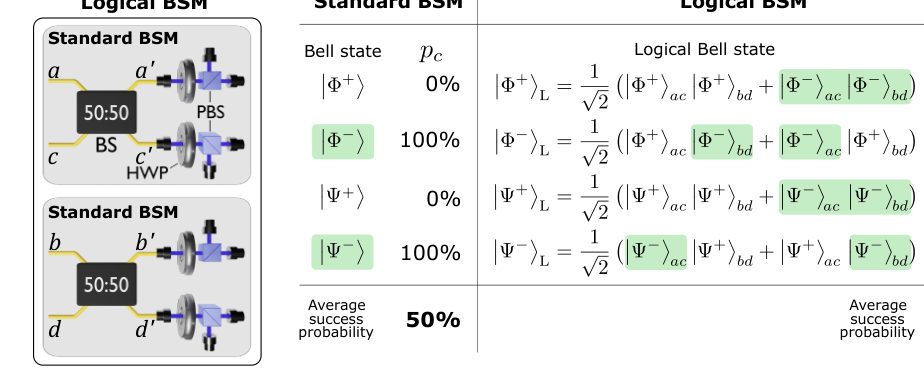
<figcaption class="paper-figure-caption"><b>Fig 1.</b> FIG. 1: Comparison between standard and logical Bell-state measurements (BSMs). (a) Schematic representation of the logical BSM. Four physical qubits encode a logical Bell state. The logical BSM is implemented using two standard BSMs on the qubit pairs (a, c) and (b, d). The output modes are rotated by applying a Hadamard gate, and then polarisation-resolved using polarising beam splitters (PBSs). (b) Success probabilities associated with each of the four Bell states for the standard BSM (left) and the logical BSM (right). In the variant of a standard BSM that we are using in our experiment, the states |Φ−⟩and |Ψ−⟩can be unambiguously identified, each with a success probability of 100%,...</figcaption>
</figure>
<figure class="paper-figure-card">
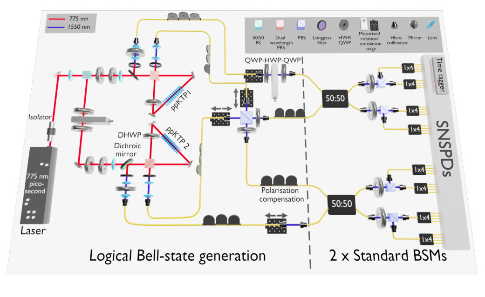
<figcaption class="paper-figure-caption"><b>Fig 2.</b> FIG. 2: Experimental implementation of the logical BSM. The setup is primarily composed of two parts: The logical Bell-state generation and the logical BSM. Logical Bell-state generation: A picosecond pulsed 775 nm laser pumps two spontaneous parametric down-conversion sources that are based on type-II ppKTP crystals to generate entangled photon pairs at 1550 nm. One photon from each pair is made incident at the two ports of a PBS. Measuring four-fold coincidences results in the generation of a state that is subsequently transformed to one of the Bell states using wave plates. We use motorised translation stages to ensure that the photons are indistinguishable in their arrival time, and...</figcaption>
</figure>
<figure class="paper-figure-card">
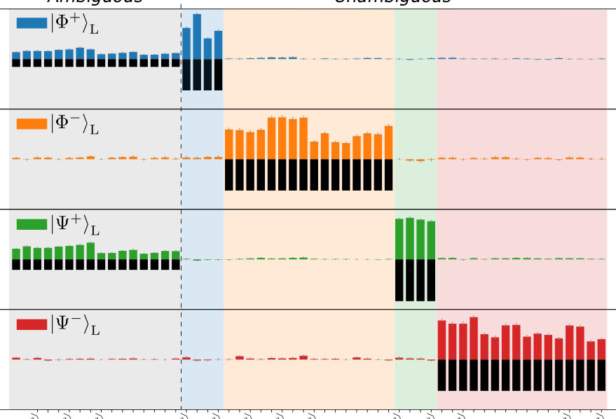
<figcaption class="paper-figure-caption"><b>Fig 3.</b> FIG. 3: Comparison of experimental and theoretical click patterns for the logical Bell-state measurement. The four panels correspond to the click patterns observed for each of the four logical Bell states. The output modes of the two physical BSMs are grouped and indicated in brackets. The measured probability distribution is represented by the coloured bars, while the theoretical values are plotted as mirrored bars for comparison. The encoded scheme allows for a subset of outcomes from the standard scheme to be correctly classified, successfully increasing the total average efficiency to (70.8 ± 0.4)%, which is beyond the 50% threshold. Background colours highlight the click patterns that...</figcaption>
</figure>
</div>

<p><strong>Summary.</strong> This paper reports the experimental realization of a logical Bell-state measurement (BSM) using linear optics on photonic qubits encoded with a repetition code. By employing error-correcting principles, the authors successfully surpassed the theoretical 50% success limit of standard BSMs, achieving over 70% efficiency. This advancement is a critical step toward building scalable, fault-tolerant quantum communication and computation platforms.</p>
<p><strong>Why it may be interesting.</strong> This work directly addresses the hardware bottleneck of BSMs in photonic quantum computing, providing a concrete, resource-efficient method to enhance performance beyond fundamental linear-optical constraints.</p>
<details>
<summary>Detailed structure</summary>
<p><strong>Main problem.</strong> The core problem is achieving fault-tolerant quantum computation, which necessitates performing Bell-state measurements (BSMs) on qubits that have been protected by quantum error-correcting codes.</p>
<p><strong>Main result.</strong> The authors experimentally demonstrated a logical BSM using linear optics that surpasses the fundamental 50% success probability limit of standard BSMs, achieving a mean success probability of (70.8 +/- 0.4)%.</p>
<p><strong>Method.</strong> The logical BSM is implemented by encoding physical qubits into a two-qubit repetition code and performing the measurement using two standard linear-optical BSMs.</p>
<p><strong>Model / system.</strong> The system uses photonic quantum information processing with linear optics. The logical qubits are encoded using a two-qubit repetition code, which is an instance of a quantum parity code capable of detecting bit-flip errors.</p>
<p><strong>Key observables.</strong> Mean success probability (measured at 70.8% vs. the 50% limit), Measurement Discrimination Fidelity (MDF), and total variation distance.</p>
<p><strong>Important parameters / regimes.</strong> The theoretical success probability for the logical BSM is 75%; the physical implementation uses two standard BSMs.</p>
<p><strong>Assumptions / limitations.</strong> The initial theoretical analysis assumes no photon loss and the use of on-off click detectors.</p>
<p><strong>Figures summary.</strong> Figure 1 compares standard and logical BSM success probabilities. Figure 2 shows the experimental setup for the logical BSM. Figure 3 compares experimental and theoretical click patterns, demonstrating the increased average efficiency.</p>
<p><strong>Paper structure.</strong> The paper establishes the need for fault-tolerant BSMs, details the theoretical framework using the two-qubit repetition code, presents the experimental realization using linear optics, and reports the measured success probability exceeding the classical limit.</p>
</details>
<details>
<summary>Abstract</summary>
<p>Fault tolerance is essential for scalable quantum technologies and is enabled by quantum error-correction codes. Bell-state measurements (BSMs) are a fundamental building block for modern quantum technologies such as measurement-based quantum computation and fusion-based quantum computation, as well as quantum networks. Therefore, performing BSMs on error-corrected qubits is a necessary step for achieving fault tolerance in these applications. In this work, we realise a logical BSM using linear optics, based on a two-qubit repetition code, an instance of a quantum parity code that allows detection of bit-flip errors, and experimentally achieve a mean success probability of (70.8 +/- 0.4)%. While standard linear-optical BSMs are fundamentally limited to a maximum success probability of 50%, this increased success probability enables higher secure key rates in quantum communication and facilitates the generation of large graph states for quantum computation. Since fault-tolerant schemes require error-correction codes regardless, this improvement comes at no additional resource overhead. Our results demonstrate that error-correction codes can be used to surpass the linear-optics limit of BSMs, which is an important step towards practical, fault-tolerant, and scalable photonic quantum technologies.</p>
</details>
<p><sub><a href="#top">↑ back to top</a></sub></p>

<p><a id="paper-2609.10771"></a></p>
<h3 id="new-method-for-path-length-equalization-of-long-single-mode-fibers-for-interferometry"><a href="http://arxiv.org/abs/2609.10771v1">New Method for Path-length Equalization of Long Single-mode Fibers for Interferometry</a></h3>
<p><strong>Authors:</strong> M. Anderson, J. D. Monnier, K. Ozdowy, J. Woillez, G. Perrin<br>
<strong>Type:</strong> experiment · <strong>Category:</strong> other · <strong>PDF:</strong> <a href="https://arxiv.org/pdf/2609.10771v1">https://arxiv.org/pdf/2609.10771v1</a><br>
<strong>Analysis basis:</strong> full PDF text, analyzed in chunks
<strong>Topic relevance:</strong> 🔥 <code>interference shaping light</code> <strong>4/5</strong> · <code>quantum measurements</code> <strong>3/5</strong> · <code>quantum optics experiment</code> <strong>3/5</strong></p>
<div class="figure-strip-hint">↔ Scroll figures horizontally</div>
<div class="paper-figures-scroll">
<figure class="paper-figure-card">
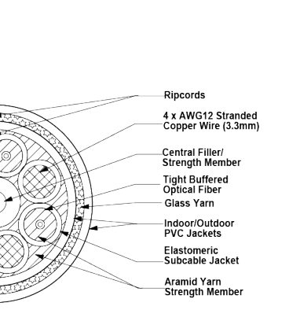
<figcaption class="paper-figure-caption"><b>Fig 1.</b> Figure 1. Cross-section of custom fiber/conductor composite cable assembly [PROPRIETARY]</figcaption>
</figure>
<figure class="paper-figure-card">
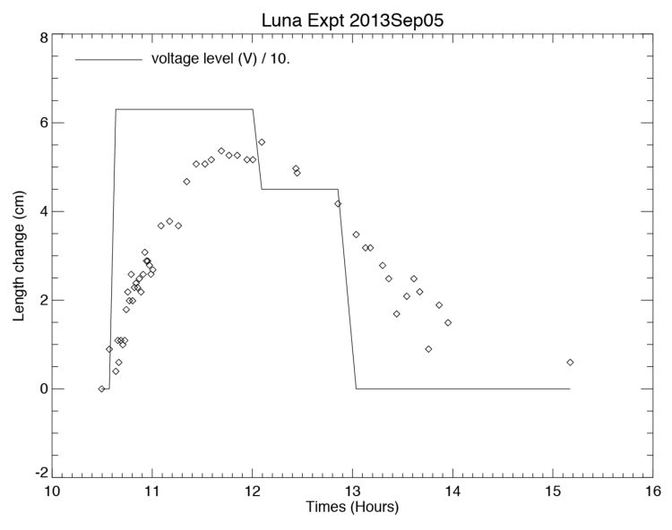
<figcaption class="paper-figure-caption"><b>Fig 2.</b> Figure 2. Test results from voltage testing of the Fiber Logix PM1550 fiber optic. The solid line represents the voltage set on the power supply and the diamonds represent length measurements made with a Luna Technologies OBR 4600.</figcaption>
</figure>
<figure class="paper-figure-card">
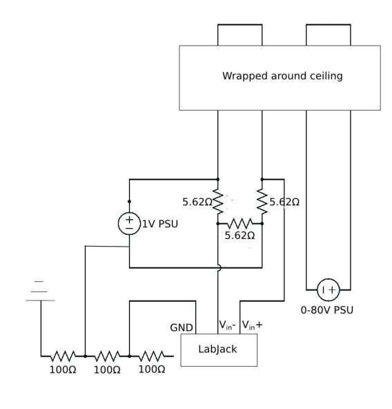
<figcaption class="paper-figure-caption"><b>Fig 3.</b> Figure 3. Wheatstone Bridge and voltage monitoring circuit used to monitor resistance and therefore length of the composite cable.</figcaption>
</figure>
<figure class="paper-figure-card">
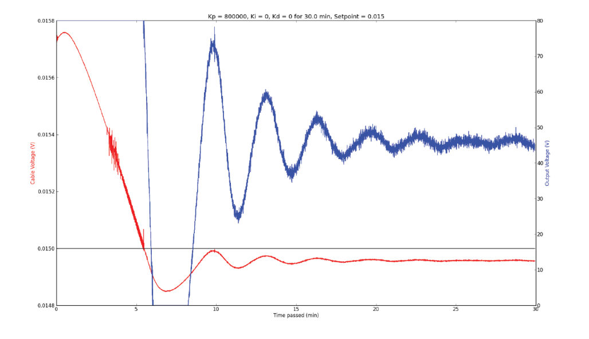
<figcaption class="paper-figure-caption"><b>Fig 4.</b> Figure 4. Results of proportional-integral control of the bridge voltage (resistance). Output voltage represents the set voltage for the DC power supply and Cable Voltage represents the voltage measured across the Wheatstone bridge.</figcaption>
</figure>
<figure class="paper-figure-card">
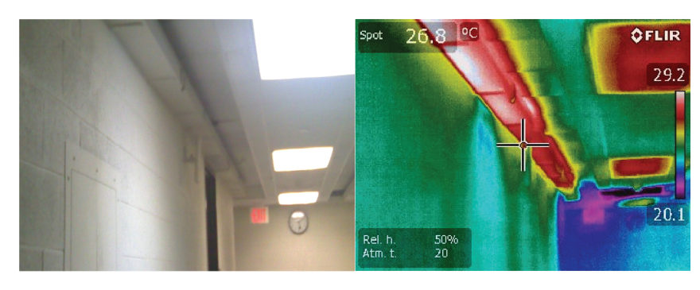
<figcaption class="paper-figure-caption"><b>Fig 5.</b> Figure 5. The cable tray around the inside of the laboratory building contains five coils of the control cable. The temperature of the tray is heated approximately 5◦C above the surrounding temperature by the powered cable.</figcaption>
</figure>
</div>

<p><strong>Summary.</strong> This paper details the development of a novel, actively controlled composite cable system designed to stabilize the optical path length of long single-mode fibers for use in interferometry. By using ohmic heating of embedded copper wires, the system precisely controls the fiber's temperature, thereby compensating for environmental thermal drifts that cause significant path length variations. The successful demonstration of OPD and dispersion control makes this technology valuable for next-generation, long-baseline optical quantum experiments.</p>
<p><strong>Why it may be interesting.</strong> While highly applied, the precise control of optical path length and dispersion over long distances using thermal management techniques is crucial for advanced quantum sensing and quantum communication links that rely on stable optical cavities or interferometers.</p>
<details>
<summary>Detailed structure</summary>
<p><strong>Main problem.</strong> The primary challenge addressed is maintaining a constant differential optical path length in very long single-mode fibers used for optical interferometry, which is severely affected by environmental thermal variations.</p>
<p><strong>Main result.</strong> The authors successfully demonstrated path length equalization and dispersion control by implementing a composite cable system that uses ohmic heating of copper wires to actively control the fiber's temperature and thus its optical properties.</p>
<p><strong>Method.</strong> The method involves building a composite cable containing SM fibers and copper wires, applying controlled DC power to the wires to induce ohmic heating, and monitoring the resulting changes in electrical resistance and optical path difference (OPD) using interferometry.</p>
<p><strong>Model / system.</strong> The physical system is a 470 m composite cable beam transport system designed for optical interferometry, containing multiple single-mode fibers (SMF28e+, PM fiber types) and copper heating wires. Control is achieved via a PID loop monitoring resistance.</p>
<p><strong>Key observables.</strong> Optical Path Difference (OPD), electrical resistance ($\Omega$), and the Full Width at Half Maximum (FWHM) of white light interference fringes (as a proxy for dispersion).</p>
<p><strong>Important parameters / regimes.</strong> Cable length (470 m), operating wavelength (H band: 1500-1800 nm), applied power (up to 1200 W), and temperature control via resistance monitoring.</p>
<p><strong>Assumptions / limitations.</strong> The system relies on the assumption that controlling the cable temperature via electrical resistance provides a reliable and measurable proxy for controlling the OPD and dispersion of the light propagating through the fiber.</p>
<p><strong>Figures summary.</strong> Figures show the cable cross-section, the Wheatstone Bridge circuit setup, and plots demonstrating the correlation between OPD vs. resistance, and dispersion (FWHM) vs. applied voltage.</p>
<p><strong>Paper structure.</strong> The paper details the physical setup (composite cable), the measurement techniques (resistance monitoring, interferometry), and presents experimental results showing successful control over OPD and dispersion using electrical heating.</p>
</details>
<details>
<summary>Abstract</summary>
<p>The ability to use single mode (SM) fibers for beam transport in optical interferometry offers practical advantages over conventional long vacuum pipes. One challenge facing fiber transport is maintaining constant differential path length in an environment where environmental thermal variations can lead to cm-level variations from day to night. We have fabricated three composite cables of length 470 m, each containing 4 copper wires and 3 SM fibers that operate at the astronomical H band (1500-1800 nm). Multiple fibers allow us to test performance of a circular core fiber (SMF28), a panda-style polarization-maintaining (PM) fiber, and a lastly a specialty dispersion-compensated PM fiber. We will present experimental results using precision electrical resistance measurements of the of a composite cable beam transport system. We find that the application of 1200 W over a 470 m cable causes the optical path difference in air to change by 75 mm (+/- 2 mm) and the resistance to change from 5.36 to 5.50 Ω. Additionally, we show control of the dispersion of 470 m of fiber in a single polarization using white light interference fringes (λc=1575 nm, Δλ=75 nm) using our method.</p>
</details>
<p><sub><a href="#top">↑ back to top</a></sub></p>

<p><a id="paper-2609.11004"></a></p>
<h3 id="on-chip-squeezed-light-in-the-audio-frequency-band"><a href="http://arxiv.org/abs/2609.11004v1">On-chip squeezed light in the audio frequency band</a></h3>
<p><strong>Authors:</strong> Xuezhi Zhu, Yunyun Cao, Rui Liu, Yaya He, Fan Zhang, Yaqing Zhang, Shiwei Du, Meihong Wang, Xiaoshun Jiang, Xiaolong Su<br>
<strong>Type:</strong> experiment · <strong>Category:</strong> quantum information and computing · <strong>PDF:</strong> <a href="https://arxiv.org/pdf/2609.11004v1">https://arxiv.org/pdf/2609.11004v1</a><br>
<strong>Analysis basis:</strong> full PDF text, analyzed in chunks
<strong>Topic relevance:</strong> 🔥 <code>quantum optics experiment</code> <strong>4/5</strong> · <code>quantum measurements</code> <strong>3/5</strong> · <code>QC/QI experiment</code> <strong>1/5</strong> · <code>interference shaping light</code> <strong>1/5</strong> · <code>methods for driven-dissipative</code> <strong>1/5</strong></p>
<div class="figure-strip-hint">↔ Scroll figures horizontally</div>
<div class="paper-figures-scroll">
<figure class="paper-figure-card">

<figcaption class="paper-figure-caption"><b>Fig 1.</b> FIG. 1. Operating principle of coherent-comb control (CCC) for phase-referenced homodyne detection of microcavity two-mode squeezed states. Paired quantum frequency modes Qi are generated via Kerr four-wave mixing, while a weak pump-derived electro-optic reference comb Ri co-propagates through the same optical path in an orthogonal polarization and with a fixed frequency bias ωb. After the cavity, the reference and quantum modes are separated and detected independently, so that phase sensing and feedback act on the reference path without introducing a bright locking tone at the quantum signal frequencies.</figcaption>
</figure>
<figure class="paper-figure-card">
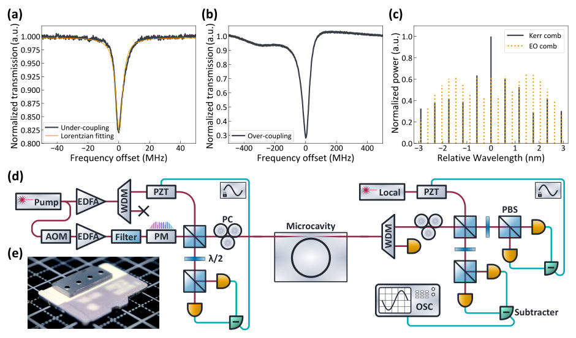
<figcaption class="paper-figure-caption"><b>Fig 2.</b> FIG. 2. Device characterization and experimental implementation. (a) Transmission spectrum of the selected pump mode at under-coupling conditions. (b) Transmission spectrum under overcoupling, exhibiting a pronounced non-Lorentzian (Fano- like) lineshape. (c) Comparison between chaotic microcombs generated above threshold and electro-optic (EO) combs used as the coherent reference. (d) Experimental setup implementing the pump-referenced phase-transfer scheme, including the EO- comb generation, polarization multiplexing, phase-locking, and balanced-homodyne detection. AOM, acousto-optic modulator; EDFA, erbium-doped fiber amplifier; PM, phase modulator; WDM, wavelength-division multiplexer;...</figcaption>
</figure>
<figure class="paper-figure-card">
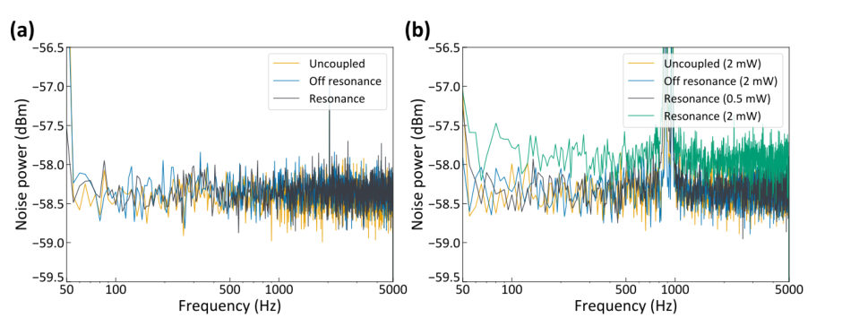
<figcaption class="paper-figure-caption"><b>Fig 3.</b> FIG. 3. Reference-induced measurement-noise characterization. (a) Noise spectra measured without the coherent reference for three conditions (uncoupled, coupled off resonance, and coupled on resonance), showing that no noise-floor elevation is resolved within the measurement setup. (b) Noise spectra measured with the coherent reference under different coupling/resonance conditions: uncoupled (Pref = 2 mW, before the microcavity), coupled off resonance (Pref = 2 mW), and coupled on resonance at Pref = 0.5 mW and 2 mW. The narrow features around 800–1000 Hz originate from oscilloscope oversampling of the control signal and do not reflect the optical noise floor.</figcaption>
</figure>
<figure class="paper-figure-card">
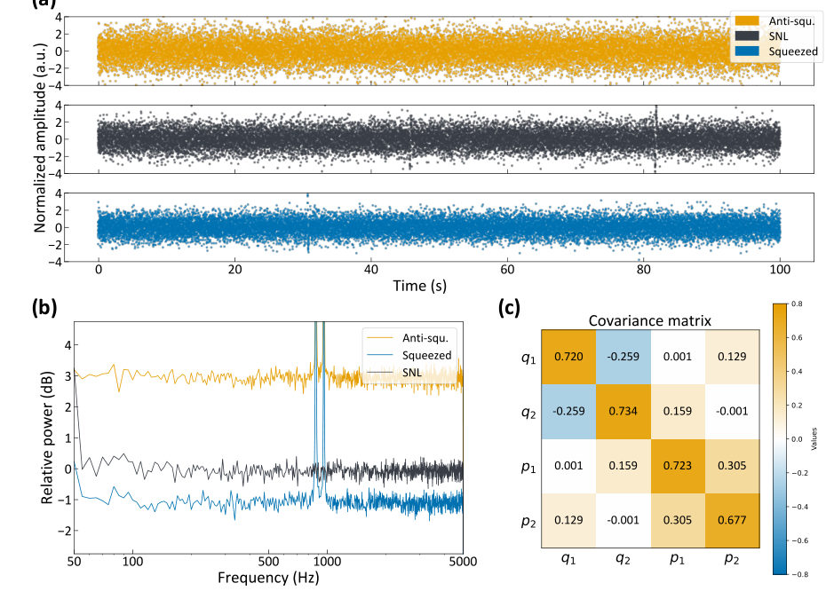
<figcaption class="paper-figure-caption"><b>Fig 4.</b> FIG. 4. Phase-locked quadrature measurement, audio-band squeezing, and entanglement verification of the phase-stabilized two-mode squeezed state. (a) Representative time-domain quadrature fluctuations (anti-squeezed, SNL, and squeezed) recorded over a 100 s acquisition window with 10 kSa/s sampling rate after phase locking, showing stable access to different quadratures and stable locked operation during the measurement interval. (b) Frequency-domain squeezing and anti-squeezing spectra demonstrating observable squeezing down to the audio band. (c) Reconstructed covariance matrix. SNL, shot-noise level.</figcaption>
</figure>
</div>

<p><strong>Summary.</strong> This paper reports the successful on-chip generation of two-mode squeezed light in the audio frequency band using a silica microcavity. To overcome technical noise and phase instability, the authors introduce a novel Coherent-Comb Control method. This technique enables stable, phase-referenced measurements, confirming both the presence of squeezing and entanglement, thus paving the way for integrated quantum sensing.</p>
<p><strong>Why it may be interesting.</strong> This work directly addresses the engineering hurdles—phase stability and noise mitigation—required to move continuous-variable quantum information processing from theory to scalable, integrated hardware platforms.</p>
<details>
<summary>Detailed structure</summary>
<p><strong>Main problem.</strong> The primary challenge is realizing stable, on-chip generation of squeezed light in the audio frequency band, which is difficult due to technical noise and the need for scalable phase referencing.</p>
<p><strong>Main result.</strong> The authors successfully demonstrated on-chip generation of two-mode squeezed states down to 60 Hz and confirmed entanglement using the Positive Partial Transpose criterion.</p>
<p><strong>Method.</strong> They developed and implemented a Coherent-Comb Control (CCC) method, using a weak electro-optic reference comb co-propagating orthogonally to provide phase-stable quadrature measurement.</p>
<p><strong>Model / system.</strong> The experiment uses a silica microcavity where two-mode squeezed states are generated via Four-Wave Mixing (FWM) in a Kerr-nonlinear medium. The system is characterized by its ability to maintain phase stability over long timescales.</p>
<p><strong>Key observables.</strong> Two-mode squeezing, entanglement (verified by minimum symplectic eigenvalue $\tilde{\nu}_- = 0.395$), and stable quadrature measurements.</p>
<p><strong>Important parameters / regimes.</strong> Audio frequency band ($\ge 60$ Hz), reference power ($P_{ref} = 0.5$ mW), and the minimum symplectic eigenvalue threshold ($< 0.5$).</p>
<p><strong>Assumptions / limitations.</strong> The analysis excludes frequencies below 60 Hz due to classical/technical noise, and the method assumes the reference field does not introduce noise into the quantum signal.</p>
<p><strong>Figures summary.</strong> Figures illustrate the operating principle of the CCC method (co-propagating quantum and reference modes), device characterization, noise spectra dependence on reference power, and time-domain quadrature fluctuations confirming stable operation.</p>
<p><strong>Paper structure.</strong> The paper details the physical challenge, introduces the CCC method for phase stabilization, presents the experimental setup and measurements (squeezing and entanglement verification), and concludes by establishing an accessible route for on-chip quantum processing.</p>
</details>
<details>
<summary>Abstract</summary>
<p>Squeezed light in the audio-frequency band is a key resource for quantum metrology and quantum sensing. However, realizing stable audio-frequency squeezed light on integrated photonic platforms remains challenging due to technical noise and the difficulty of scalable phase referencing. Here, we demonstrate on-chip generation of audio-band two-mode squeezed states down to 60 Hz in a silica microcavity. To enable phase-stable operation without directly locking fragile quantum modes, we develop a coherent-comb control method in which a weak electro-optic reference comb co-propagates with the vacuum at the quantum frequency modes in an orthogonal polarization. This scheme provides quadrature measurement and long-timescale phase stability, thereby enabling covariance-matrix reconstruction. We verify the entanglement with the positive partial transposition criterion, which confirms inseparability via a minimum symplectic eigenvalue of 0.395 ($<0.5$). Our results establish an experimentally accessible route toward on-chip phase-stable audio-band squeezing and support the scalable framework for continuous-variable quantum information processing with integrated photonics.</p>
</details>
<p><sub><a href="#top">↑ back to top</a></sub></p>

<p><a id="paper-2609.11238"></a></p>
<h3 id="optically-induced-metallic-state-with-persistent-monoclinic-symmetry-in-ndniomath51math"><a href="http://arxiv.org/abs/2609.11238v1">Optically induced metallic state with persistent monoclinic symmetry in NdNiO$_3$</a></h3>
<p><strong>Authors:</strong> Christian Tzschaschel, Felix Utsch, Qi Song, Spencer Doyle, Grace A. Pan, Charles M. Brooks, Julia A. Mundy, Clemens von Korff Schmising, Stefan Eisebitt<br>
<strong>Type:</strong> experiment · <strong>Category:</strong> strongly correlated electrons · <strong>PDF:</strong> <a href="https://arxiv.org/pdf/2609.11238v1">https://arxiv.org/pdf/2609.11238v1</a><br>
<strong>Analysis basis:</strong> full PDF text, analyzed in chunks
<strong>Topic relevance:</strong> 🔥 <code>non-equilibrium universality</code> <strong>4/5</strong> · <code>driven-dissipative phase transition</code> <strong>3/5</strong> · <code>Keldysh / 2PI / non-Gaussian methods</code> <strong>1/5</strong> · <code>methods for driven-dissipative</code> <strong>1/5</strong> · <code>quantum measurements</code> <strong>1/5</strong></p>
<div class="figure-strip-hint">↔ Scroll figures horizontally</div>
<div class="paper-figures-scroll">
<figure class="paper-figure-card">
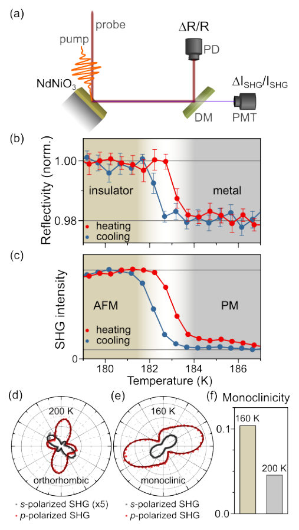
<figcaption class="paper-figure-caption"><b>Fig 1.</b> FIG. 1. Static characterization.(a) Schematic of the experimental setup for time-resolved multi-probe spectroscopy. The</figcaption>
</figure>
<figure class="paper-figure-card">
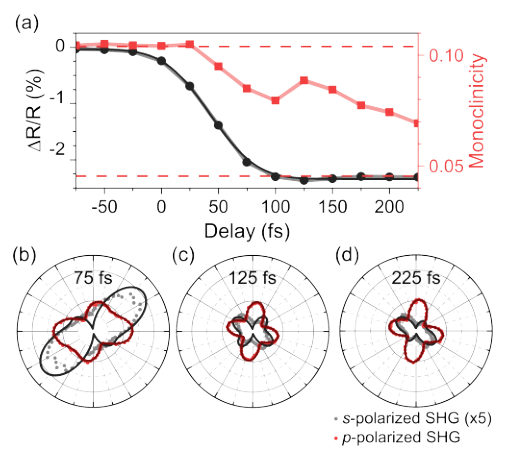
<figcaption class="paper-figure-caption"><b>Fig 2.</b> FIG. 2. Sub-picosecond symmetry dynamics.(a) Pump-induced changes of and reflectivity (black dots) and monoclinicity</figcaption>
</figure>
<figure class="paper-figure-card">
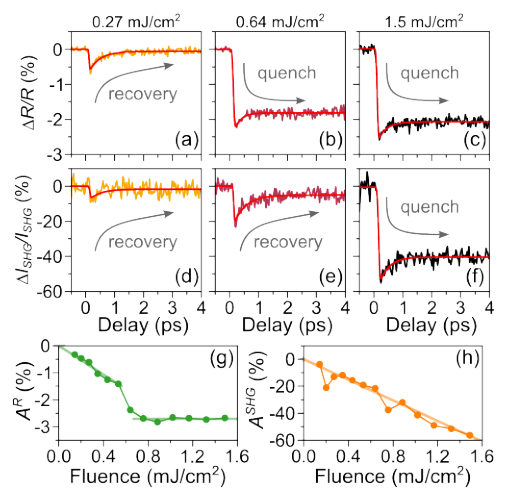
<figcaption class="paper-figure-caption"><b>Fig 3.</b> FIG. 3. Indications for an optically induced monoclinic metal state.(a)-(c) Fluence dependence of pump-induced</figcaption>
</figure>
<figure class="paper-figure-card">
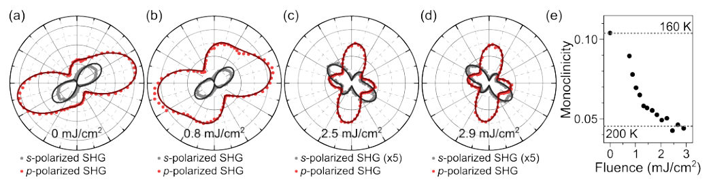
<figcaption class="paper-figure-caption"><b>Fig 4.</b> FIG. 4. Symmetry of the pump-induced metastable state.(a)-(d) SHG polarization dependence at 5 ps after the optical</figcaption>
</figure>
</div>

<p><strong>Summary.</strong> This experiment uses ultrafast spectroscopy on $   ext{NdNiO}_3$ to study its metal-insulator transition. By simultaneously measuring reflectivity and SHG, the researchers found that optical excitation can drive the material into a metastable state that is metallic but structurally retains the symmetry of the insulating phase. This proves a non-equilibrium decoupling between electronic metallicity and structural symmetry in correlated oxides.</p>
<p><strong>Why it may be interesting.</strong> The observation of transient, decoupled electronic and structural states provides a powerful experimental platform for studying non-equilibrium dynamics in strongly correlated systems, which is relevant to understanding quench dynamics in quantum materials.</p>
<details>
<summary>Detailed structure</summary>
<p><strong>Main problem.</strong> The study investigates whether electronic and structural order remain coupled when a correlated material undergoes a metal-insulator transition under non-equilibrium, photoinduced conditions.</p>
<p><strong>Main result.</strong> The research demonstrates a non-equilibrium decoupling where optical excitation can stabilize a metastable state exhibiting metallic reflectivity while retaining the structural symmetry of the insulating phase.</p>
<p><strong>Method.</strong> The authors employed simultaneous time-resolved multi-probe spectroscopy, measuring linear optical reflectivity and symmetry-sensitive second-harmonic generation (SHG) on $    ext{NdNiO}_3$.</p>
<p><strong>Model / system.</strong> The physical system is $    ext{NdNiO}_3$, a correlated oxide known for a first-order metal-insulator transition between a high-temperature orthorhombic metal and a low-temperature monoclinic insulator. Measurements are performed on thin films.</p>
<p><strong>Key observables.</strong> Time-resolved reflectivity ($\Delta R/R$) to track metallicity, and SHG intensity/polarization dependence to track structural symmetry (monoclinicity).</p>
<p><strong>Important parameters / regimes.</strong> Excitation fluence (ranging from low to high), time delay (sub-picosecond to ps scale), and temperature (near the phase transition point).</p>
<p><strong>Assumptions / limitations.</strong> The analysis assumes that changes in reflectivity and SHG are direct, measurable indicators of the electronic and structural order parameters, respectively.</p>
<p><strong>Figures summary.</strong> Figures illustrate static measurements confirming the equilibrium phase transition and symmetry, and time-resolved traces showing the rapid change in reflectivity versus the more gradual change in symmetry following optical excitation.</p>
<p><strong>Paper structure.</strong> The paper first establishes the equilibrium phase diagram using static measurements. It then uses time-resolved spectroscopy to probe the non-equilibrium dynamics, comparing the fluence dependence of the metallic signal versus the symmetry recovery to identify the transient, decoupled state.</p>
</details>
<details>
<summary>Abstract</summary>
<p>Understanding whether electronic and structural order remain coupled under nonequilibrium conditions is a central challenge in correlated materials. Here, we simultaneously track metallicity and symmetry across the photoinduced insulator-to-metal transition in NdNiO$_3$ using time-resolved optical reflectivity and symmetry-sensitive second-harmonic generation. We find that metallic reflectivity emerges at significantly lower excitation fluence than restoration of the orthorhombic high-temperature symmetry. As a result, optical excitation stabilizes a metastable state that combines the reflectivity of the metallic phase with the monoclinic symmetry of the insulating phase, revealing an optically induced monoclinic metal. Only at substantially higher fluences does the symmetry fully recover to that of the high-temperature phase. These results demonstrate a nonequilibrium decoupling of metallicity and structural symmetry and establish simultaneous multiprobe spectroscopy as a powerful approach for identifying emergent phases in correlated materials.</p>
</details>
<p><sub><a href="#top">↑ back to top</a></sub></p>

<p><a id="paper-2609.11730"></a></p>
<h3 id="an-exchange-assisted-entangling-gate-between-87rb-and-171yb-rydberg-atoms"><a href="http://arxiv.org/abs/2609.11730v1">An exchange-assisted entangling gate between 87Rb and 171Yb Rydberg atoms</a></h3>
<p><strong>Authors:</strong> Han Wang, Erdong Huang, Mingrui Jing, Hongshun Yao, Xin Wang, Jinguo Liu<br>
<strong>Type:</strong> theory · <strong>Category:</strong> other · <strong>PDF:</strong> <a href="https://arxiv.org/pdf/2609.11730v1">https://arxiv.org/pdf/2609.11730v1</a><br>
<strong>Analysis basis:</strong> full PDF text, analyzed in chunks
<strong>Topic relevance:</strong> 🔥 <code>QC/QI experiment</code> <strong>4/5</strong> · <code>Rydberg arrays</code> <strong>3/5</strong> · <code>analog quantum simulation</code> <strong>2/5</strong></p>
<div class="figure-strip-hint">↔ Scroll figures horizontally</div>
<div class="paper-figures-scroll">
<figure class="paper-figure-card">
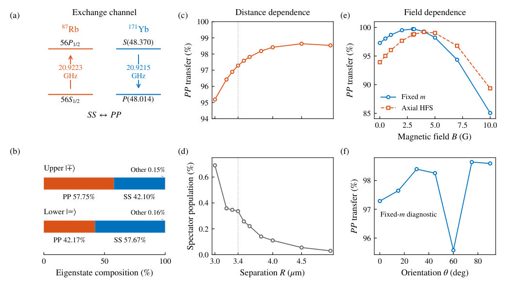
<figcaption class="paper-figure-caption"><b>Fig 1.</b> FIG. 1. Microscopic characterization of the 87Rb–171Yb F¨orster exchange channel. (a) Species-resolved energy- level diagram for the resonant exchange interaction between Rb (56S1/2 →56P1/2) and Yb [S(ν ≈48.37) →P(ν ≈48.01)], yielding sub-megahertz unperturbed F¨orster defects ∆el and ∆hfs in the zero-field limit (B = 0, E = 0). The level positions are schematic; the labeled transition energies identify the near-resonant exchange. (b) Stacked compositions of the two bright eigenstates |e±⟩at R = 3.4 µm (B = 0). Each bar sums to 100%: orange denotes PP, blue denotes SS, and gray denotes spectator states. Component percentages are labeled directly. Both eigenstates have more than 99.8% weight...</figcaption>
</figure>
<figure class="paper-figure-card">
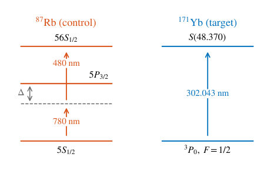
<figcaption class="paper-figure-caption"><b>Fig 2.</b> FIG. 2. Optical excitation schemes for the 87Rb–171Yb gate. Level spacings and arrow lengths are schematic and not to scale. Left (Rb control): two-photon ladder (780 nm + 480 nm) excites 5S1/2 to 56S1/2 via the detuned 5P3/2 in- termediate level (solid arrows: resonant fields; dashed: in- termediate detuning). Right (Yb target): single-photon σ+</figcaption>
</figure>
<figure class="paper-figure-card">
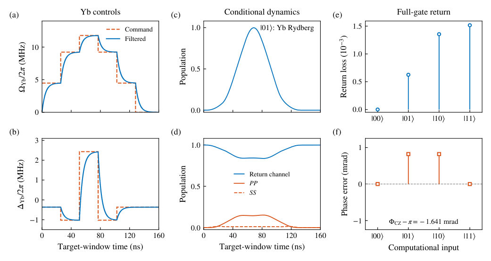
<figcaption class="paper-figure-caption"><b>Fig 3.</b> FIG. 3. Pulse control, population return, and the conditional gate phase. (a,b) Yb Rabi frequency and detuning: dashed orange commands and solid blue drives filtered by the assumed first-order response, with tr = 10 ns (10%–90% rise time). Time starts at the target-window entrance and includes the response tail. Two 100 ns Rb pulses surround this window. (c,d) Populations from unnormalized no-jump evolution, initialized separately at the target-window entrance for the unblocked |01⟩and control-excited |11⟩branches. The latter visits SS and PP before returning to its entrance channel; the closing Rb pulse maps this channel back to |11⟩. (e) Full-sequence return losses 1 −|kjj|2, including...</figcaption>
</figure>
<figure class="paper-figure-card">
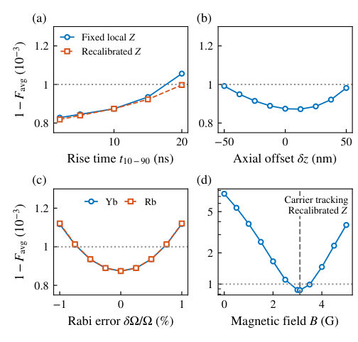
<figcaption class="paper-figure-caption"><b>Fig 4.</b> FIG. 4. Sensitivity of the fixed pulse to control and geometry perturbations. (a) Yb response-time scan with local-Z corrections held fixed or recalibrated at each point. The command segments are fixed; the 7τ tail, and hence total duration, varies with response time. (b,c) Axial-displacement and individual Rabi-amplitude scans with nominal local-Z corrections held fixed. All panels express infidelity 1 −Favg in units of 10−3; panels (a)–(c) use linear axes to resolve the narrow range. (d) Magnetic-field scan with optical carriers tracking the atomic transitions and local-Z corrections recal- ibrated at each field, shown on a logarithmic infidelity axis. The vertical line marks 3.10 G....</figcaption>
</figure>
<figure class="paper-figure-card">
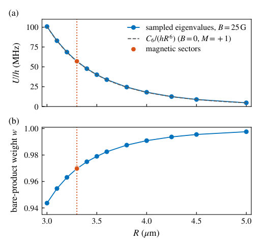
<figcaption class="paper-figure-caption"><b>Fig 5.</b> FIG. 5. A sampled repulsive van der Waals branch provides a candidate static interaction scale U/h = 57.1 MHz at R = 3.3 µm. (a) Pair shift U/h for 87Rb 66S1/2+ Yb S(ν=62.6823) at B = 25 G, θ = 0, (mRb, mYb) = (+1/2, +1/2). Solid: maximum-overlap eigenvalues at the sampled separations. Dashed: zero-field stretched-channel guide C6/(hR6) with C6/h = +73.58 GHz·µm6. The four nearly superposed markers at R = 3.3 µm denote the mag- netic product configurations (spread 0.6% in U). The dotted vertical line marks the candidate static-interaction distance R = 3.3 µm. (b) Bare-product pair-state weight w of the tracked branch along the same finite-field track. These static diagnostics do not...</figcaption>
</figure>
</div>

<p><strong>Summary.</strong> This paper reports on the implementation of an exchange-assisted controlled-Z gate between $^{87}	ext{Rb}$ and $^{171}	ext{Yb}$ Rydberg atoms. By exploiting a specific Förster resonance, the authors overcome the challenge of Stark mixing to achieve a high-fidelity gate ($99.91\%$). This work advances the field of scalable quantum computation using neutral atom arrays.</p>
<p><strong>Why it may be interesting.</strong> This work provides a concrete, high-fidelity protocol for building hybrid quantum processors using different atomic species, which is a major goal in quantum information science utilizing neutral atoms.</p>
<details>
<summary>Detailed structure</summary>
<p><strong>Main problem.</strong> The primary challenge addressed is realizing high-fidelity interspecies entangling gates between different atomic species ($^{87}	ext{Rb}$ and $^{171}	ext{Yb}$) without suffering from destructive Stark mixing.</p>
<p><strong>Main result.</strong> The authors successfully demonstrated a controlled-Z gate with an intrinsic fidelity of $99.91\%$ using an exchange-assisted protocol.</p>
<p><strong>Method.</strong> The gate is implemented by shaping an optical pulse to drive the system through a specific Förster resonance, generating the necessary conditional phase shift.</p>
<p><strong>Model / system.</strong> The system uses a dual-species neutral atom array combining $^{87}	ext{Rb}$ (ancilla) and $^{171}	ext{Yb}$ (data qubit). The interaction is mediated by an optically accessible $S+S \leftrightarrow P+P$ Förster resonance.</p>
<p><strong>Key observables.</strong> Intrinsic fidelity ($99.91\%$), gate duration ($0.36 \ \mu	ext{s}$), and the conditional phase $\Phi_{CZ}$.</p>
<p><strong>Important parameters / regimes.</strong> Interaction strength ($|V|/h = 15.4 	ext{ MHz}$), separation distance ($R = 3.4 \ \mu	ext{m}$), and magnetic field strength ($B = 3.10 	ext{ G}$).</p>
<p><strong>Assumptions / limitations.</strong> The analysis initially uses a fixed-electronic-$m$ model, which is later extended to include hyperfine structure (HFS); the protocol relies on the strong coupling dominating over Zeeman shifts.</p>
<p><strong>Figures summary.</strong> Figures characterize the Förster exchange channel, showing dependence on separation and field, and illustrate the optical excitation schemes and the resulting conditional gate phase accumulation.</p>
<p><strong>Paper structure.</strong> The paper proceeds by first characterizing the microscopic Förster resonance and pair interaction, then detailing the three-stage pulse sequence required for the CZ gate, and finally quantifying the achieved fidelity under controlled conditions.</p>
</details>
<details>
<summary>Abstract</summary>
<p>Neutral-atom tweezer arrays support scalable quantum information processing. Dual-species $^{87}\mathrm{Rb}$--$^{171}\mathrm{Yb}$ arrays combine long-lived ytterbium nuclear-spin data qubits with fast, species-selective rubidium ancilla control and readout. However, realizing interspecies gates without inducing destructive Stark mixing in divalent atoms remains an outstanding problem. Here, we identify an optically accessible $S{+}S\leftrightarrow P{+}P$ Förster resonance at zero electric field, providing strong dipole-dipole exchange at array pitch. Using a shaped optical pulse under finite control response, we demonstrate a $0.36\,μ\mathrm{s}$ exchange-assisted controlled-$Z$ gate with an intrinsic fidelity of $99.91\%$, remaining above $99.85\%$ under bounded perturbations. We also identify an auxiliary repulsive van der Waals channel, providing a comprehensive toolbox for hybrid quantum processors.</p>
</details>
<p><sub><a href="#top">↑ back to top</a></sub></p>

<p><a id="paper-2609.11351"></a></p>
<h3 id="optimizing-quantum-encodings-for-analog-simulation-through-dynamical-algebra-reachability"><a href="http://arxiv.org/abs/2609.11351v1">Optimizing quantum encodings for analog simulation through dynamical algebra reachability</a></h3>
<p><strong>Authors:</strong> Mariane Mangin-Brinet<br>
<strong>Type:</strong> theory · <strong>Category:</strong> other · <strong>PDF:</strong> <a href="https://arxiv.org/pdf/2609.11351v1">https://arxiv.org/pdf/2609.11351v1</a><br>
<strong>Analysis basis:</strong> full PDF text, analyzed in chunks
<strong>Topic relevance:</strong> 🔥 <code>analog quantum simulation</code> <strong>4/5</strong> · <code>Rydberg arrays</code> <strong>3/5</strong></p>
<div class="figure-strip-hint">↔ Scroll figures horizontally</div>
<div class="paper-figures-scroll">
<figure class="paper-figure-card">
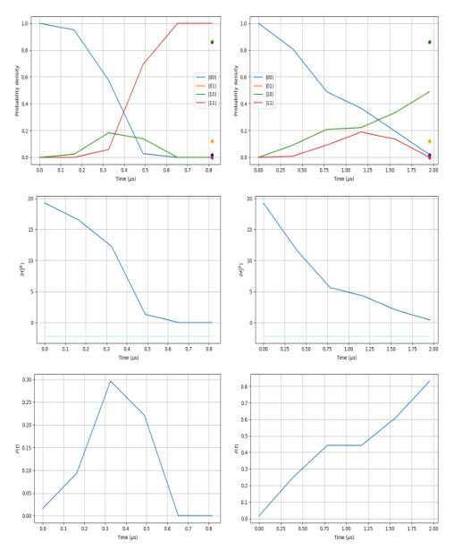
<figcaption class="paper-figure-caption"><b>Fig 1.</b> FIG. 1: Evolution of three Rydberg atoms with optimized parameters to reach the ground state of the deuteron Hamil- tonian H(1) 3,SB. The top panel displays the probability density evolution, and the bottom one the corresponding energy. The dashed line corresponds to the exact deuteron ground state en- ergy. The Rydberg Hamiltonian for 2 atoms being symmetric in the exchange of the atoms, the states |01⟩and |10⟩are de- generated. The exact deuteron ground state is represented by colored dots.</figcaption>
</figure>
<figure class="paper-figure-card">

<figcaption class="paper-figure-caption"><b>Fig 2.</b> FIG. 2: Evolution of three Rydberg atoms with optimized parameters to reach the ground state of the deuteron Hamil- tonian H(1) 3,opt (Eq. (8)). The top panel displays the probabil- ity density evolution, and the bottom one the corresponding energy. The dashed line corresponds to the exact deuteron ground state energy. The Rydberg Hamiltonian for 2 atoms being symmetric in the exchange of the atoms, the states |01⟩and |10⟩are degenerated. The last Rydberg state has a 99.999% fidelity with the deuteron ground state, represented by colored dots.</figcaption>
</figure>
</div>

<p><strong>Summary.</strong> This paper introduces a geometry-independent framework to optimize quantum encodings for analog quantum simulators by maximizing the algebraic overlap between the target Hamiltonian's dynamics and the hardware's native control space. By optimizing the encoding representation using principal angles, the authors show that representation-level incompatibilities can be identified and corrected before physical pulse optimization. This establishes algebraic reachability as a crucial preprocessing criterion for designing robust quantum simulations on platforms like Rydberg atoms.</p>
<p><strong>Why it may be interesting.</strong> This provides a systematic, low-cost diagnostic tool (algebraic reachability) to predict the feasibility of simulating complex Hamiltonians on specific hardware architectures before embarking on computationally expensive, full joint optimization.</p>
<details>
<summary>Detailed structure</summary>
<p><strong>Main problem.</strong> The core problem is diagnosing and optimizing the compatibility between the dynamics generated by a target Hamiltonian and the restricted operator space accessible by the native controls of an analog quantum processor.</p>
<p><strong>Main result.</strong> A geometry-independent preprocessing step, optimizing the encoding via principal angles, can substantially improve algebraic compatibility, sometimes achieving full algebraic containment for small systems.</p>
<p><strong>Method.</strong> The authors use a framework involving Riemannian gradient descent on the unitary orbit of the target Hamiltonian to maximize the overlap between the target spectral algebra and the device's Krylov-type operator space.</p>
<p><strong>Model / system.</strong> The work is applied to simulating the deuteron Hamiltonian using a Rydberg-atom analog processor. The system involves mapping a target Hamiltonian onto the device's native control Hamiltonians (e.g., Ising interactions).</p>
<p><strong>Key observables.</strong> Principal angles between the spectral algebra and the Krylov space; state-preparation fidelity; the dimension of the intersection between the two operator spaces.</p>
<p><strong>Important parameters / regimes.</strong> System size (N=3, 4 vs N&gt;=5); the specific atomic geometry (which is varied in the analysis); the degree of alignment (vanishing principal angles).</p>
<p><strong>Assumptions / limitations.</strong> The optimization is treated as a preprocessing step, meaning the resulting encoding is independent of the specific, geometry-dependent interaction terms ($H_0(\mathbf{r})$) used in the final physical simulation.</p>
<p><strong>Figures summary.</strong> Figure 2 compares the evolution of the target Hamiltonian using standard binary encoding versus principal-angle-optimized encoding, showing the latter achieves much higher fidelity for the ground state.</p>
<p><strong>Paper structure.</strong> The paper introduces the framework by defining the spectral algebra and the Krylov space, details the unitary-orbit optimization using Riemannian gradient descent, and applies this methodology to the deuteron Hamiltonian on a Rydberg processor.</p>
</details>
<details>
<summary>Abstract</summary>
<p>Analog quantum computers provides direct access to continuous many-body dynamics, but their native control Hamiltonians generate only a restricted operator space. Consequently, the fidelity with which they can reproduce a target Hamiltonian's dynamics depends not only on spectral agreement but on whether the physical controls can actually generate the required evolution. We introduce a geometry-independent framework for diagnosing and optimizing this compatibility between the spectral algebra generated by a target Hamiltonian $H$ and a Krylov-type operator space generated from the device's independently tunable control Hamiltonians and a fixed initial state. The encoding problem can be formulated as an optimization over the unitary orbit of the target Hamiltonian. We maximize a smooth subspace-overlap functional using Riemannian gradient descent on $U(d)$, thereby selecting a spectrally equivalent representation whose target algebra is better aligned with the native controls. We apply this framework to the deuteron Hamiltonian encoded on a Rydberg-atom analog processor. The standard binary encoding is strongly misaligned with this space for small system sizes, while principal-angle optimization substantially improves the algebraic compatibility of the encoding. Moreover, using a single geometry-independent optimized encoding substantially reduces the sensitivity of state-preparation fidelity to the atomic geometry. These results establish algebraic reachability as a useful preprocessing criterion for analog encoding design: it identifies representation-level incompatibilities before device-specific geometry and pulse optimization, while the distinction between algebra-level and state-level reachability clarifies when full encoding optimization is necessary and when geometry-dependent control resources can compensate for incomplete algebraic alignment.</p>
</details>
<p><sub><a href="#top">↑ back to top</a></sub></p>

<p><a id="paper-2609.11416"></a></p>
<h3 id="the-quantum-plumbers-problem"><a href="http://arxiv.org/abs/2609.11416v1">The Quantum Plumber's Problem</a></h3>
<p><strong>Authors:</strong> Nicolas G. Underwood, Holger F. Hofmann, Jonte R. Hance<br>
<strong>Type:</strong> theory · <strong>Category:</strong> quantum information and computing · <strong>PDF:</strong> <a href="https://arxiv.org/pdf/2609.11416v1">https://arxiv.org/pdf/2609.11416v1</a><br>
<strong>Analysis basis:</strong> full PDF text, analyzed in chunks
<strong>Topic relevance:</strong> 🔥 <code>quantum measurements</code> <strong>4/5</strong> · <code>interference shaping light</code> <strong>3/5</strong></p>
<div class="figure-strip-hint">↔ Scroll figures horizontally</div>
<div class="paper-figures-scroll">
<figure class="paper-figure-card">

<figcaption class="paper-figure-caption"><b>Fig 1.</b> FIG. 1: The path-encoded d-state qudit interferometer setup we consider, with A) The outline setup, with input ports labelled |α1〉...|αd〉and output ports and corresponding photon detectors labelled |ω1〉...|ωd〉. B) The vertical cross-sections between nodes corresponding to differing complete orthonormal bases that we refer to as “contexts”. C) Nodes containing a generalised MZI/beam splitter capable of performing any transformation in U(2).</figcaption>
</figure>
<figure class="paper-figure-card">

<figcaption class="paper-figure-caption"><b>Fig 2.</b> FIG. 2: Hofmann’s three-path interferometer [25]. Here the beamsplitters have reflectivities R1 = R2 = 1/2, RS1 = RS2 = 1/3, and RF = 1/4, and apply a π phase shift to reflections from/to the middle path. The labelled paths correspond to the states |D1〉= (|2〉−|3〉)/ p</figcaption>
</figure>
<figure class="paper-figure-card">

<figcaption class="paper-figure-caption"><b>Fig 3.</b> FIG. 3: Example probability tree for classical values of P(ω|no blockage) given a photon entered into input α2 or α3. Trees for α2 and α3 are the same due to the 1/2 reflectivity of the first beamsplitter, R1. In the presence of a blockage at any of the locations β ∈{D1,S1,P1,F,P2,S2,D2}, the corresponding branches may be cut off, with the sum over total probabilities at the cuts comprising P(ω0|β).</figcaption>
</figure>
<figure class="paper-figure-card">

<figcaption class="paper-figure-caption"><b>Fig 4.</b> FIG. 4: Information gain in an example game that takes 4 turns. The initial uncertainty log|B| is exhausted by the information gained over the 4 turns.</figcaption>
</figure>
<figure class="paper-figure-card">

<figcaption class="paper-figure-caption"><b>Fig 5.</b> FIG. 5: Illustration of why blockage β may be ruled out when detector ωp (for p ̸= 0) activates, if the inner product between the projection of both ¯¯ψ ® and ¯¯ωp ® onto the kernel of ¯¯β ®­ β ¯¯ vanishes.</figcaption>
</figure>
</div>

<p><strong>Summary.</strong> This paper formalizes the 'Quantum Plumber's Problem' to test quantum advantage in path identification within an interferometer. It uses Bayesian inference to show how optimal strategies update knowledge about a hidden blockage location based on quantum measurement outcomes. The work provides a rigorous, game-theoretic analysis applicable to quantum sensing and quantum information protocols.</p>
<p><strong>Why it may be interesting.</strong> It provides a concrete, game-theoretic framework for quantifying quantum advantage in fundamental quantum measurement tasks, directly relevant to quantum optics and quantum channel discrimination.</p>
<details>
<summary>Detailed structure</summary>
<p><strong>Main problem.</strong> The paper introduces and analyzes the 'Quantum Plumber's Problem,' a scenario designed to quantify quantum advantage in path discrimination within an interferometer.</p>
<p><strong>Main result.</strong> The optimal strategy for locating a blockage in a path-encoded interferometer is determined by iteratively updating prior probabilities using Bayesian inference based on measurement outcomes.</p>
<p><strong>Method.</strong> The analysis models the problem as a game, comparing quantum interference strategies against classical single-particle models using repeated simulations and Bayesian updates.</p>
<p><strong>Model / system.</strong> The system is a generalized path-encoded d-state (qudit) interferometer, which can be analyzed for specific cases like Hofmann's three-path interferometer.</p>
<p><strong>Key observables.</strong> The probability $P(\omega|eta)$ of a detector $\omega$ activating given a blockage $eta$, and the resulting updated posterior probabilities $P(eta|\omega)$.</p>
<p><strong>Important parameters / regimes.</strong> The number of paths ($d$), the number of blockage locations ($|B|$), and the required precision for numerical stability (e.g., $10^{-10}$ cut-off).</p>
<p><strong>Assumptions / limitations.</strong> The blockage is trace-reducing, and the analysis assumes perfect lossless components for the core quantum mechanical model.</p>
<p><strong>Figures summary.</strong> Figure 1 illustrates the general path-encoded qudit interferometer setup, while Figure 2 details Hofmann's specific three-path interferometer configuration.</p>
<p><strong>Paper structure.</strong> The paper defines the game, analyzes competing strategies using a Gamemaster protocol for Bayesian updates, and discusses extensions to non-demolition detection.</p>
</details>
<details>
<summary>Abstract</summary>
<p>Recent work quantified the notion of quantum counterfactual gain for an extended Elitzur-Vaidman bomb test style scenario, through a connection to the negativity of the Kirkwood-Dirac quasiprobability distribution. We here extend this work to identifying quantum advantage in a new scenario, which we term the <code>Quantum Plumber's Problem''. In this scenario, we imagine a</code>quantum plumber'', who knows that one path of an interferometer is blocked, and wants to find the optimal strategy for identifying with certainty which path this is. We discuss various strategies for a generalised path-encoded interferometer, as well as for the specific case of Hofmann's three-path interferometer, introduced in a recent analysis of the relationship between states in five measurement contexts of a three level system. We support our arguments on the relative merit of competing strategies with data collected over many simulated attempts at locating blockages. We also present results for a variant of the game in which the blockage is replaced by a non-demolition detector.</p>
</details>
<p><sub><a href="#top">↑ back to top</a></sub></p>

<p><a id="paper-2609.11678"></a></p>
<h3 id="acoustic-wave-function-imaging-of-sublattice-physics-in-a-kagome-lattice"><a href="http://arxiv.org/abs/2609.11678v1">Acoustic Wave-Function Imaging of Sublattice Physics in a Kagome Lattice</a></h3>
<p><strong>Authors:</strong> L. Müller, N. Endres, B. Geldiyev, S. Widmann, K. Burkard, M. Ünzelmann, F. Reinert<br>
<strong>Type:</strong> experiment · <strong>Category:</strong> strongly correlated electrons · <strong>PDF:</strong> <a href="https://arxiv.org/pdf/2609.11678v1">https://arxiv.org/pdf/2609.11678v1</a><br>
<strong>Analysis basis:</strong> full PDF text, analyzed in chunks
<strong>Topic relevance:</strong> 🔥 <code>analog quantum simulation</code> <strong>4/5</strong> · <code>quantum measurements</code> <strong>2/5</strong></p>
<div class="figure-strip-hint">↔ Scroll figures horizontally</div>
<div class="paper-figures-scroll">
<figure class="paper-figure-card">

<figcaption class="paper-figure-caption"><b>Fig 1.</b> FIG. 1. Acoustic kagome lattice and band structure. (a) Three-dimensional model of the experimental setup. (b) Top-view image of the 3D-printed kagome lattice. (c) Measured acoustic band structure, obtained by an incoherent sum of the response over all sublattices, overlaid with the minimal tight-binding (TB) model calculation (solid lines). (d) Experimental isofrequency surfaces at the selected frequencies (see inset). (e) Calculated isofrequency surfaces from the TB model including a non-zero hopping to the hollow site.</figcaption>
</figure>
<figure class="paper-figure-card">

<figcaption class="paper-figure-caption"><b>Fig 2.</b> FIG. 2. (a) A comparison of the flat band sublattice char- acteristics from experiment (top) and the TB model (bot- tom). The isofrequency contours reveal complex direction- dependent m- and p-type sublattice contributions. (b) Real- space phase and amplitude map at the flat-band frequency. The map demonstrates sublattice interference on the kagome net, characterized by a π phase difference between adjacent resonators and vanishing amplitude at the hollow sites.</figcaption>
</figure>
<figure class="paper-figure-card">

<figcaption class="paper-figure-caption"><b>Fig 3.</b> FIG. 3. Experimental (left column) isofrequency contours and TB calculated constant energy cuts (middle column). The upper row shows the p-type sublattice character, i.e. only one sublattice contributes at each M-point, of the upper vHS and the bottom row shows the m-type sublattice character, i.e. two sublattices contribute at each M-point, of the lower vHS. The circles in the measured panels show σ of the Gaussian that was used to select the area in k-space that was Fourier back transformed. The resulting Fourier filtered real-space plots of the amplitude can be seen in the right column. Both plots show that the wave only exists on the sublattice corresponding to the sublattices at the...</figcaption>
</figure>
</div>

<p><strong>Summary.</strong> This work uses an acoustic metamaterial realization of a kagome lattice to directly image the electronic wave function. By measuring the full excitation spectrum, the researchers successfully mapped the momentum-dependent sublattice texture across the band structure. This constitutes the first direct experimental proof of sublattice-resolved physics in this important quantum material model.</p>
<p><strong>Why it may be interesting.</strong> The direct, real-space imaging of wave function properties (amplitude and phase) in a solid-state analogue system provides a powerful, non-equilibrium tool to probe fundamental electronic structure concepts relevant to strongly correlated materials.</p>
<details>
<summary>Detailed structure</summary>
<p><strong>Main problem.</strong> The primary challenge is experimentally proving the sublattice character of electronic features (like Dirac cones, vHS, and flat bands) in the kagome lattice, which requires direct access to the real-space wave function amplitude and phase.</p>
<p><strong>Main result.</strong> The study reports the first direct experimental observation of the sublattice-resolved band structure in a kagome lattice, confirming predicted momentum-space textures and real-space wave function localization.</p>
<p><strong>Method.</strong> The authors implemented an acoustic kagome lattice and measured the full excitation spectrum (amplitude and phase) at each lattice site, followed by Fourier transformation to analyze momentum-space texture.</p>
<p><strong>Model / system.</strong> The physical system is an acoustic kagome lattice realized using a metamaterial structure. The results are compared against a minimal tight-binding (TB) model that describes the electronic band structure.</p>
<p><strong>Key observables.</strong> Momentum-dependent sublattice texture in $\mathbf{k}$-space, real-space wave function amplitude and phase maps, and the full acoustic excitation spectrum.</p>
<p><strong>Important parameters / regimes.</strong> The analysis focuses on specific features like the flat band ($\approx 10.9$ kHz) and van Hove singularities (vHS) at 5.5 kHz and 8.0 kHz.</p>
<p><strong>Assumptions / limitations.</strong> The core argument relies on the direct experimental verification of the hopping-interference mechanism and the assumption that the observed physics is governed by the Kagome lattice structure.</p>
<p><strong>Figures summary.</strong> Figures illustrate the experimental setup, the measured band structure, isofrequency surfaces, and detailed plots showing the momentum-space texture and real-space amplitude/phase maps for the flat band and vHS.</p>
<p><strong>Paper structure.</strong> The paper establishes the theoretical background of the kagome lattice, details the experimental setup and measurement techniques (acoustic wave imaging), presents the agreement between measured band structure and TB model, and finally analyzes the sublattice character using real-space and momentum-space imaging.</p>
</details>
<details>
<summary>Abstract</summary>
<p>The canonical kagome band structure hosts a Dirac cone, saddle-point van Hove singularities (vHS), and a flat band. Characteristically, these features exhibit distinct sublattice localization within the three-site basis of the kagome lattice. However, experimental proof of this sublattice character is challenging and requires direct access to both the real-space wave function and its associated momentum-space texture. Here, we implement an acoustic kagome lattice on the cm scale and measure the full excitation spectrum, thereby imaging the wave function at each lattice site, including both amplitude and phase. This enables investigation of the momentum-dependent sublattice texture across the complete band structure, particularly at the flat band and at the mixed- and pure-sublattice van Hove singularities. Our results are in excellent agreement with minimal tight-binding model calculations and constitutes the first direct experimental observation of the sublattice-resolved band structure in a kagome lattice.</p>
</details>
<p><sub><a href="#top">↑ back to top</a></sub></p>

<p><a id="paper-2609.11387"></a></p>
<h3 id="entanglement-meets-reality-a-network-engineering-assessment-and-forecast-of-rackable-entanglement-sources"><a href="http://arxiv.org/abs/2609.11387v1">Entanglement Meets Reality: A Network Engineering Assessment and Forecast of Rackable Entanglement Sources</a></h3>
<p><strong>Authors:</strong> Laura d'Avossa, Daniela Salvoni, Angela Sara Cacciapuoti, Marcello Caleffi<br>
<strong>Type:</strong> experiment · <strong>Category:</strong> quantum information and computing · <strong>PDF:</strong> <a href="https://arxiv.org/pdf/2609.11387v1">https://arxiv.org/pdf/2609.11387v1</a><br>
<strong>Analysis basis:</strong> full PDF text, analyzed in chunks
<strong>Topic relevance:</strong> 🔥 <code>quantum optics experiment</code> <strong>4/5</strong> · <code>QC/QI experiment</code> <strong>1/5</strong> · <code>quantum measurements</code> <strong>1/5</strong></p>
<div class="figure-strip-hint">↔ Scroll figures horizontally</div>
<div class="paper-figures-scroll">
<figure class="paper-figure-card">

<figcaption class="paper-figure-caption"><b>Fig 1.</b> Figure 1: An entanglement source defines a quantum network. The interconnection of multiple quantum networks relies on entanglement distribution.</figcaption>
</figure>
<figure class="paper-figure-card">

<figcaption class="paper-figure-caption"><b>Fig 2.</b> Figure 2: Simplified schematic of the operating principle of the EPS. A CW Pump Laser is converted into a train of optical pulses by the pulse generator, whose repetition rate is set by the frequency parameter. The pulse energy is subsequently adjusted through a VOA (Variable Optical Attenuator) before pumping the nonlinear crystal, where polarization-entangled photon pairs are generated via SPDC.</figcaption>
</figure>
<figure class="paper-figure-card">

<figcaption class="paper-figure-caption"><b>Fig 3.</b> Figure 3: Schematic representation of the possible Fock-state outcomes associated with successive pump pulses in the EPS. The desired event corresponds to the single-pair state |1, 1⟩, generated with probability pg, while higher-order components such as |2, 2⟩represent multi-pair emission events.</figcaption>
</figure>
<figure class="paper-figure-card">

<figcaption class="paper-figure-caption"><b>Fig 4.</b> Figure 4: The entangled photon source (EPS) generates signal and idler photons at ITU channels 24 and 44, respectively. Each output channel is connected to a 1 × 4 fiber beam splitter, whose four outputs pass through manual polariza- tion controllers (MPCs) before being coupled to independent superconducting nanowire single-photon detectors (SNSPDs). The eight detectors implement a spatially multiplexed pseudo photon-number-resolving (PNR) detection scheme, while the resulting detection events are acquired by a time tagger to reconstruct the coincidence patterns used for photon-number estimation.</figcaption>
</figure>
<figure class="paper-figure-card">

<figcaption class="paper-figure-caption"><b>Fig 5.</b> Figure 5: Operating maps of the useful N11 events, all detected multiphoton events N (all) multi, two-arm multiphoton coincidences obtained by excluding single-arm events N (coinc) multi , and the corresponding multiphoton-to-N11 ratio ηmulti. Columns compare the investigated source and ITU channels. The first three rows share a logarithmic count scale, whereas the fourth row uses an independent percentage scale.</figcaption>
</figure>
</div>

<p><strong>Summary.</strong> This work evaluates commercial entangled-photon sources from a network engineering perspective, focusing on deployable performance rather than just device characterization. By quantifying both pair throughput and entanglement quality, the authors establish a key metric for achievable entanglement generation rates. This directly informs the hardware requirements, specifically the necessary coherence time, for building future quantum repeaters.</p>
<p><strong>Why it may be interesting.</strong> It provides a crucial engineering bridge, translating fundamental quantum optics measurements (like pair rates and fidelity) into actionable, network-level metrics (like required memory coherence time) essential for quantum network architects.</p>
<details>
<summary>Detailed structure</summary>
<p><strong>Main problem.</strong> The paper assesses the performance and forecasts the requirements of rackable entangled-photon sources for real-world quantum network deployments, moving beyond simple device characterization.</p>
<p><strong>Main result.</strong> The achievable entanglement throughput is determined by a trade-off between the detected pair rate and the entanglement quality, which directly dictates the minimum required quantum memory coherence time for future quantum repeater nodes.</p>
<p><strong>Method.</strong> The authors combine experimental measurements of pair rates and quantum state tomography (reconstructing density matrices) with theoretical bounds like the one-way hashing bound to estimate distillable entanglement rates.</p>
<p><strong>Model / system.</strong> The system is a compact, rack-mounted Entangled-Photon-pair Source (EPS) utilizing Spontaneous Parametric Down-Conversion (SPDC) to generate polarization-entangled photon pairs in the telecom band.</p>
<p><strong>Key observables.</strong> Detected-pair rate ($R_{pair}$), entanglement fidelity ($F$), distillable entanglement ($ED$), and the achievable entanglement throughput lower bound ($R_{LB}^{	ext{ebit}}$).</p>
<p><strong>Important parameters / regimes.</strong> Frequency, pump pulse energy (controlled by VOA), and the required quantum-memory coherence time ($T_{coh}$).</p>
<p><strong>Assumptions / limitations.</strong> The analysis relies on the one-way hashing bound, which assumes ideal Local Operations and Classical Communication (LOCC), and assumes the vacuum states are not detected.</p>
<p><strong>Figures summary.</strong> Figures illustrate the EPS setup, the Fock-state outcomes, and summarize performance metrics (fidelity, pair rate, throughput) for different source configurations (EPS1 vs. EPS2) across varying operating points.</p>
<p><strong>Paper structure.</strong> The paper progresses from defining the problem (source performance for networks) to detailing measurements (pair rate, density matrix reconstruction) to deriving key network-oriented KPIs (throughput, memory time) based on measured optical quantities.</p>
</details>
<details>
<summary>Abstract</summary>
<p>Quantum networks are transitioning from labo- ratory experiments to real-world deployments, with entangle- ment as their fundamental resource. Since an entanglement source effectively defines a quantum network, its performance directly impacts the reliability, scalability, and efficiency of future quantum communications. In this work, we investigate rack-mountable plug-and-play entangled-photon sources from a network engineering perspective, shifting the focus from device characterization to deployment-oriented performance evaluation. Building upon an extensive experimental campaign, we assess commercially deployable hardware across multiple operating conditions, evaluate current state-of-the-art capabilities, and pro- vide an outlook on future generations of entanglement sources. We identify and evaluate two key performance indicators (KPIs): multi-photon generation, capturing deviations from ideal single- pair emission, and entanglement quality, quantified through the reconstructed two-qubit density matrix. By combining the measured detected-pair rate with the one-way hashing bound derived from each density matrix, we estimate a lower bound on the achievable distillable-entanglement generation rate, providing a compact metric that captures the trade-off between pair throughput and entanglement quality. Finally, we translate these experimental results into lower bounds on the quantum-memory coherence time required for entanglement distillation, directly linking optical source performance to the hardware requirements of future quantum repeater nodes.</p>
</details>
<p><sub><a href="#top">↑ back to top</a></sub></p>

<p><a id="paper-2609.10929"></a></p>
<h3 id="probing-the-error-mitigation-threshold-with-matrix-product-states"><a href="http://arxiv.org/abs/2609.10929v1">Probing the Error-Mitigation Threshold with Matrix Product States</a></h3>
<p><strong>Authors:</strong> Jia-Yao Zhao, Zhi-Yuan Wei, Michael J. Gullans<br>
<strong>Type:</strong> theory · <strong>Category:</strong> numerical methods · <strong>PDF:</strong> <a href="https://arxiv.org/pdf/2609.10929v1">https://arxiv.org/pdf/2609.10929v1</a><br>
<strong>Analysis basis:</strong> full PDF text, analyzed in chunks
<strong>Topic relevance:</strong> 🔥 <code>methods for driven-dissipative</code> <strong>4/5</strong> · <code>driven-dissipative phase transition</code> <strong>1/5</strong> · <code>non-equilibrium universality</code> <strong>1/5</strong></p>
<div class="figure-strip-hint">↔ Scroll figures horizontally</div>
<div class="paper-figures-scroll">
<figure class="paper-figure-card">

<figcaption class="paper-figure-caption"><b>Fig 1.</b> FIG. 1. Statistical mapping and tensor-network evaluation of the error-mitigation threshold. (a) Schematic phase diagram as a function of disorder strength and scaled depth σ2t, separating QEM-success and QEM-failure regimes. (b) 1D brickwork circuit with Haar-random two-qubit gates (purple boxes), local noise of two different rates (red/blue circles), and mean-field antinoise (green diamonds). (c) (1 + 1)D two-replica Ising-like statistical model obtained from (b) after the local two-design average. Edges represent the resulting two-site interactions. Vertex colors distinguish the two replica-spin sectors. Red/blue arrows denote the noise-induced fields for the two rates, and green arrows...</figcaption>
</figure>
<figure class="paper-figure-card">

<figcaption class="paper-figure-caption"><b>Fig 2.</b> FIG. 2. Entanglement evolution in the annealed-disorder all-to-all statistical model for N = 30. (a) Bipartite von Neumann entanglement entropy SMPS(t) of the normalized MPS across a fixed cut, which diagnoses the entanglement cost of the MPS contraction. (b) Corresponding circuit-averaged bipartite R´enyi-2 entropy Sa(t) [Eq. (5)] for the subsystem on one side of that cut, used to probe the error-mitigation threshold.</figcaption>
</figure>
<figure class="paper-figure-card">

<figcaption class="paper-figure-caption"><b>Fig 3.</b> FIG. 4. Finite-depth thresholds in 2D architectures. (a),(d) Circuit-averaged Sa for annealed disorder at χ = 40: (a) the square lattice at t = 120 and (d) the heavy-hex lattice at t = 270; insets show finite-size collapses with dashed black fitted scaling functions. (b),(c) Extracted σc/¯q and ν versus χ for the square lattice, and (e),(f) for heavy-hex. The parameter and inset uncertainties are covariance estimates from the nonlinear collapse fits.</figcaption>
</figure>
<figure class="paper-figure-card">

<figcaption class="paper-figure-caption"><b>Fig 4.</b> FIG. 3. Benchmark of the fixed-bond-dimension MPS method. (a),(b) Circuit-averaged single-site R´enyi-2 entropy Sa at t = 4N and χ = 40 for (a) quenched 1D and (b) annealed all-to-all circuits. Colored lines are guides to the eye; the inset in (b) shows the finite-size-scaling collapse, with the dashed black curve denoting the fitted scaling function. (c),(d) Ex- tracted σc/¯q and ν versus χ for the all-to-all geometry. The parameter and inset uncertainties are covariance estimates from the nonlinear collapse fits.</figcaption>
</figure>
</div>

<p><strong>Summary.</strong> This work develops a novel Matrix Product State (MPS) technique to probe the error-mitigation threshold in large, high-dimensional quantum circuits. By mapping the problem to a replicated statistical model, the authors overcome previous computational limitations to precisely determine critical thresholds for 2D lattices. This establishes replicated tensor-network dynamics as a practical tool for assessing quantum hardware noise resilience.</p>
<p><strong>Why it may be interesting.</strong> The application of tensor networks (MPS) to study non-equilibrium quantum error correction thresholds provides a powerful, scalable computational tool for characterizing noise robustness in complex quantum hardware architectures.</p>
<details>
<summary>Detailed structure</summary>
<p><strong>Main problem.</strong> The paper addresses the challenge of accurately determining the error-mitigation threshold in quantum circuits when noise characterization is imperfect.</p>
<p><strong>Main result.</strong> The authors successfully extended threshold calculations to large and higher-dimensional noisy circuits (2D square and heavy-hex) by developing a fixed-bond-dimension MPS method.</p>
<p><strong>Method.</strong> They map the circuit dynamics to a replicated transfer process modeled as a Random-Field Ising Model, which is then simulated using a fixed-bond-dimension Matrix Product State (MPS) approach.</p>
<p><strong>Model / system.</strong> The system is a noisy random circuit on qubits, whose dynamics are analyzed via a two-replica statistical model. The analysis covers various geometries: 1D, all-to-all, 2D square, and 2D heavy-hex lattices.</p>
<p><strong>Key observables.</strong> Rényi-2 Entropy ($S_a$) and two-point mutual information ($I_{ab}$) are used as primary diagnostics to locate the phase transition threshold.</p>
<p><strong>Important parameters / regimes.</strong> The critical disorder strength ($\sigma_c/ar{q}$) and the critical exponent ($
u$) are the key extracted parameters, alongside the bond dimension ($\chi$) and circuit depth ($t$).</p>
<p><strong>Assumptions / limitations.</strong> The core approximation is the use of a fixed-bond-dimension MPS truncation ($\chi$) to compress the high-dimensional replicated dynamics, allowing study beyond exact propagation limits.</p>
<p><strong>Figures summary.</strong> Figures illustrate the phase diagram separating success/failure regimes, show entanglement evolution ($S_a$) for different disorder types, and present finite-size scaling collapses for determining $\sigma_c/ar{q}$ and $
u$ across various geometries.</p>
<p><strong>Paper structure.</strong> The paper systematically derives the necessary transfer rules for the two-replica model, implements the evolution using MPS/TEBD, and then applies finite-size scaling analysis to extract critical parameters for different lattice geometries.</p>
</details>
<details>
<summary>Abstract</summary>
<p>Quantum error mitigation relies on accurate noise characterization, but mismatches between the actual and characterized noise can be amplified and drive a sharp threshold between successful and failed mitigation. In random circuits, this threshold maps onto a random-field Ising transition, but previous exact numerics were limited to small one-dimensional and all-to-all systems, leaving explicit two-dimensional architectures unresolved. We develop a fixed-bond-dimension matrix-product-state method for the replicated transfer dynamics that extends threshold calculations beyond exact propagation while retaining the finite-size signatures of the transition. At system sizes beyond previous exact studies, we recover the predicted absence of a threshold for quenched disorder in 1D, obtain a sharper annealed all-to-all critical point, and resolve architecture-dependent finite-depth thresholds in 2D square and heavy-hex circuits. These results establish replicated tensor-network dynamics as a practical tool for probing error-mitigation thresholds in large and higher-dimensional noisy circuits.</p>
</details>
<p><sub><a href="#top">↑ back to top</a></sub></p>

<p><a id="paper-2609.11637"></a></p>
<h3 id="certifying-adversarial-robustness-of-quantum-classifiers-under-known-readout-query-access"><a href="http://arxiv.org/abs/2609.11637v1">Certifying Adversarial Robustness of Quantum Classifiers under Known-Readout Query Access</a></h3>
<p><strong>Authors:</strong> Ji Guan, Mingyu Huang<br>
<strong>Type:</strong> both · <strong>Category:</strong> quantum information and computing · <strong>PDF:</strong> <a href="https://arxiv.org/pdf/2609.11637v1">https://arxiv.org/pdf/2609.11637v1</a><br>
<strong>Analysis basis:</strong> full PDF text, analyzed in chunks
<strong>Topic relevance:</strong> 🔥 <code>quantum measurements</code> <strong>4/5</strong> · <code>Full counting statistics</code> <strong>1/5</strong></p>
<div class="figure-strip-hint">↔ Scroll figures horizontally</div>
<div class="paper-figures-scroll">
<figure class="paper-figure-card">

<figcaption class="paper-figure-caption"><b>Fig 1.</b> Figure 1: Classical vs. quantum classifier. Top: a neural network maps an image to a label. Middle: a quantum program (e.g., OpenQASM [7]) is compiled to a circuit, run on hardware, and measured. Bottom: the abstraction Q = (H,𝑈, {𝑀𝑘}𝑘∈C) evolves |𝜓⟩by 𝑈, measures with {𝑀𝑘}, outputs 𝑝𝑘= Tr[𝑀𝑘𝑈|𝜓⟩⟨𝜓|𝑈†], and predicts 𝑡= arg max𝑘𝑝𝑘. Certification uses only the readout {𝑀𝑘} and shot-estimated 𝑝𝑘, not the circuit 𝑈.</figcaption>
</figure>
<figure class="paper-figure-card">

<figcaption class="paper-figure-caption"><b>Fig 2.</b> Figure 2: Visualization of robustness bounds as nested fidelity-distance regions around the input state |𝜓⟩. The in- terior of the lower-bound region 𝜀RLB is guaranteed safe, the upper bound 𝜀RUB gives an attack witness radius, and the op- timal robustness 𝜀∗lies in between.</figcaption>
</figure>
<figure class="paper-figure-card">

<figcaption class="paper-figure-caption"><b>Fig 3.</b> Figure 3: Universal vs. attack-based upper bounds.</figcaption>
</figure>
<figure class="paper-figure-card">

<figcaption class="paper-figure-caption"><b>Fig 4.</b> Figure 4: Lower-bound comparison under the spectral-box-active diagnostic readout. The proposed spectral-box lower bound is compared with the probability-only bound.</figcaption>
</figure>
<figure class="paper-figure-card">

<figcaption class="paper-figure-caption"><b>Fig 5.</b> Figure 6 compares the lower bound 𝜀RLB, numerical white-box refer- enceb𝜀ref, and upper bound 𝜀RUB for the standard MNIST benchmark. Their mean values are 0.0012, 0.0013, and 0.3166, respectively. The numerical reference lies between the two certificates on every re- tained input. This is an empirical comparison, distinct from the theoretical relation 𝜀RLB ≤𝜀∗≤𝜀RUB; the reference is not a proved global optimum.</figcaption>
</figure>
</div>

<p><strong>Summary.</strong> This paper introduces a novel, measurement-only framework to certify the adversarial robustness of quantum classifiers under limited access (KRQA). It derives both a lower and an upper bound for the true robustness radius using only the known measurement operators and sampled outcome statistics. The results demonstrate that this method provides auditable, theoretically grounded guarantees on quantum model security, validated on real quantum hardware.</p>
<p><strong>Why it may be interesting.</strong> This work provides a crucial, practical tool for auditing quantum machine learning models by quantifying their resilience to subtle input perturbations using only accessible measurement statistics, which is vital for deploying quantum algorithms in sensitive applications.</p>
<details>
<summary>Detailed structure</summary>
<p><strong>Main problem.</strong> The paper addresses the challenge of certifying the adversarial robustness of quantum classifiers when the only available access is through repeated measurements (Known-Readout Query Access, KRQA).</p>
<p><strong>Main result.</strong> The authors developed a measurement-only framework that provides two complementary, certifiable bounds (lower and upper) on the robustness radius, which can be estimated directly from observable measurement statistics.</p>
<p><strong>Method.</strong> The methodology involves deriving both a lower bound via optimization over outcome distributions with operator-spectrum constraints and an upper bound using gap operators induced by the known readout measurement (POVM).</p>
<p><strong>Model / system.</strong> The system is a quantum classifier, modeled as an evolution $U$ followed by a measurement $M$, operating on an input state $|\psi
angle$. The analysis is restricted to the observable readout effects $\{M_k\}$ and finite-shot outcome statistics.</p>
<p><strong>Key observables.</strong> The primary observables are the known readout measurement (POVM) and the estimated outcome probabilities from repeated quantum circuit executions.</p>
<p><strong>Important parameters / regimes.</strong> The key parameters include the robustness radius $\epsilon^*$, the number of classes $C$, and the confidence parameters $\delta$ and $\epsilon$ used in finite-sample guarantees.</p>
<p><strong>Assumptions / limitations.</strong> The framework assumes the readout measurement (POVM) is fully known to the evaluator, and the guarantees are finite-sample guarantees based on observed statistics.</p>
<p><strong>Figures summary.</strong> Figures illustrate the comparison between the derived upper and lower robustness bounds ($ ext{RLB} \le \epsilon^* \le     ext{RUB}$) against numerical white-box references and the success rates of various adversarial attacks (e.g., FGSM, PGD) on benchmark datasets like Fashion-MNIST.</p>
<p><strong>Paper structure.</strong> The paper establishes the theoretical framework for robustness certification under KRQA, derives the mathematical forms for the lower and upper bounds using dual optimization techniques, analyzes the required query complexity for statistical estimation, and concludes with extensive empirical validation on quantum neural network benchmarks using real hardware data.</p>
</details>
<details>
<summary>Abstract</summary>
<p>A quantum classifier assigns labels by evolving an input quantum state and measuring the output, so repeated executions reveal only a distribution over labels. We study certified adversarial robustness for such classifiers under known-readout query access (KRQA), where an evaluator can prepare inputs, knows the quantum measurement, and observes finite-shot outcomes but cannot inspect the internal evolution, parameters, or gradients. We give a measurement-only framework that returns two complementary guarantees for each input: a lower bound ruling out untargeted errors within a radius, and an attack-independent upper bound witnessing an adversarial state within a radius. Both are estimable from the known readout measurement and sampled outcomes, require no tomography or circuit description, and admit finite-sample guarantees. The upper bound uses gap operators induced by the quantum measurement; the lower bound relaxes state-space search to an efficient optimization over outcome distributions with operator-spectrum constraints, yielding certificates that are never weaker than prior probability-only certificates and can be strictly stronger when the spectral constraints are active. Evaluations on multiple quantum classifiers show that the lower bound tracks exact optima on tractable instances, while the upper bound remains informative when standard attacks fail. We further demonstrate real-device feasibility on IBM Quantum hardware: from 40 executions of two 8-qubit quantum neural networks, our method computes both certificates, with the expected ordering between the lower and upper bounds on every tested input. Taken together, these results show that robustness claims for quantum classifiers can be audited directly from observable statistics under KRQA.</p>
</details>
<p><sub><a href="#top">↑ back to top</a></sub></p>

<p><a id="paper-2609.11214"></a></p>
<h3 id="enhancing-charge-stability-of-ge-quantum-well-heterostructures-via-sige-layer-composition-engineering"><a href="http://arxiv.org/abs/2609.11214v1">Enhancing charge stability of Ge quantum well heterostructures via SiGe layer composition engineering</a></h3>
<p><strong>Authors:</strong> Ding-Ming Huang, Jun-Hang Liu, Han Gao, Jie-Yin Zhang, Jian-Huan Wang, Fang-Ze Liu, Xin-Yu Zhou, Yi Luo, Bin-Xiao Fu, Xiao-Fei Liu, Ji-Yin Wang, Jian-Jun Zhang, H. Q. Xu<br>
<strong>Type:</strong> experiment · <strong>Category:</strong> quantum information and computing · <strong>PDF:</strong> <a href="https://arxiv.org/pdf/2609.11214v1">https://arxiv.org/pdf/2609.11214v1</a><br>
<strong>Analysis basis:</strong> full PDF text, analyzed in chunks
<strong>Topic relevance:</strong> 🔥 <code>QC/QI experiment</code> <strong>4/5</strong> · <code>quantum measurements</code> <strong>1/5</strong></p>
<div class="figure-strip-hint">↔ Scroll figures horizontally</div>
<div class="paper-figures-scroll">
<figure class="paper-figure-card">

<figcaption class="paper-figure-caption"><b>Fig 1.</b> Figure 1: Layer structures, simulated energy band profiles and hole density distributions of SiGe/Ge QW heterostructures with a Si0.2Ge0.8 top barrier and a CM top barrier. a and d, Layer structures of the heterostructures with a Si0.2Ge0.8 top barrier and with a CM top barrier layer. b and e, VBM energy (Ev) profiles at zero electric field for the heterostructures in figures a and d, respectively. The white dashed line in figure e marks the interface between the Si0.2Ge0.8 spacer layer and the CM layer. c, Ev profile and hole density distribution of the heterostructures with a Si0.2Ge0.8 top barrier, i.e., figure a, at a gate voltage approaching to the onset of charge trapping. A...</figcaption>
</figure>
<figure class="paper-figure-card">

<figcaption class="paper-figure-caption"><b>Fig 2.</b> Figure 2: Structure characterizations on heterostructure H1. a, Cross-sectional TEM image of the epitaxial layers in H1. b, HAADF TEM image of the QW region in the vicinity of the dashed rectangle marked in figure a. The overlaid traces show the composition profiles of Si and Ge along the growth direction measured by EDS. c, XRD-RSM image of H1. The vertical dashed line marks the uniform in-plane lattice constant of the epitaxial layers, demonstrating a fully strained condition in both the Ge QW and the CM top barrier layer.</figcaption>
</figure>
<figure class="paper-figure-card">

<figcaption class="paper-figure-caption"><b>Fig 3.</b> Figure 3: Stability characterization measurements of Hall devices. a, Schematic diagram of measurement protocol on Hall bar devices. The ending gate voltage Vsn decrease over succes- sive measuring loops. b, Transfer characteristic curves at varied Vsn, distinguished by colors, for a representative device from H1 (H1-Dev1). These curves are vertically offset by 0.1 µA for clarity. The threshold voltages possess a “stable zone” for small |Vsn| and begin to drift linearly with more negative Vsn (“linear shift zone”). The two zones are marked by black brackets. c, Threshold voltages as a function of Vsn for H1-Dev1 (orange) and H0-Dev1 (blue). The dashed lines show the extrapolation of the...</figcaption>
</figure>
<figure class="paper-figure-card">

<figcaption class="paper-figure-caption"><b>Fig 4.</b> Figure 4: Charge noise measurements of quantum dot devices via current spectroscopy method. a, False-color SEM image of device A, comprising a double quantum dot (yellow) and a charge sensor dot (red). The barrier gates (light blue) and the plunger gates (orange) are used to tune tunneling barriers and electro-chemical potential of quantum dots, respectively. The cutter gates (light green) are for separating the charge sensor dot from the double dot electrically. The scale bar is 300 nm. b, Current through the charge sensor dot Isd as a function of corresponding plunger gate voltage VP. Two coulomb oscillation peaks (peak 1 and peak 2) are used for charge noise measurements. Inset (zoom-in...</figcaption>
</figure>
<figure class="paper-figure-card">

<figcaption class="paper-figure-caption"><b>Fig 5.</b> Figure 5: Charge noise measurements of quantum dot devices by Coulomb peak tracking method. a, Repeated measurements of a Coulomb peak of the sensor dot in device A over 7 hours. The overlapped white line tracks the peak positions along Vp over time. b, Charge noise power spectral density extracted from figure a. The red dashed line shows the fitting to the data in the range of 0.2 −2 mHz with the formula S0/f α. The exponent value α is fitted to be 1.21 ± 0.15. The cyan dot marks the charge noise amplitude at f = 1 mHz. c, Noise amplitude at f = 1 mHz for different Coulomb peaks of device A-C. The distributions of the results are from repeated measurements sampled at random time intervals....</figcaption>
</figure>
</div>

<p><strong>Summary.</strong> This work engineers Ge quantum well heterostructures by modulating the SiGe barrier composition to solve the critical issue of charge instability in spin qubit platforms. By preventing charge accumulation at interfaces, the researchers achieved significantly enhanced gate voltage stability and measured ultra-low charge noise in quantum dot devices. This demonstrates a promising material pathway for building high-performance quantum computing hardware.</p>
<p><strong>Why it may be interesting.</strong> The focus on charge noise and stability directly impacts the coherence time of qubits, making the material engineering and low-noise measurements highly relevant to open quantum systems research.</p>
<details>
<summary>Detailed structure</summary>
<p><strong>Main problem.</strong> The primary challenge addressed is enhancing the charge stability of Ge quantum well heterostructures, which is critical for building reliable spin qubit devices.</p>
<p><strong>Main result.</strong> Composition modulation of the SiGe top barrier significantly enhances charge stability, leading to an enlarged stable gate voltage range and achieving remarkably low charge noise ($0.46\,\mathrm{\mu eV}/\mathrm{\sqrt{Hz}}$) in quantum dot devices.</p>
<p><strong>Method.</strong> The study combines molecular beam epitaxy (MBE) for material growth with advanced electrical characterization techniques, including Hall bar measurements for stability and current spectroscopy/Coulomb peak tracking for charge noise.</p>
<p><strong>Model / system.</strong> The physical system is a SiGe/Ge quantum well heterostructure. The key mechanism involves engineering the SiGe top barrier via graded composition modulation to prevent charge accumulation states at the SiGe-dielectric interface.</p>
<p><strong>Key observables.</strong> Stable gate voltage range ($   ext{V}<em _epsilon="\epsilon">{    ext{stable}}$), charge noise power spectral density ($ ext{S}</em>$), and voltage drift over extended periods.</p>
<p><strong>Important parameters / regimes.</strong> The low charge noise amplitude ($0.46\,\mathrm{\mu eV}/\mathrm{\sqrt{Hz}}$) and the ability to maintain stability over hours are key performance metrics.</p>
<p><strong>Assumptions / limitations.</strong> The effectiveness of the composition modulation technique in mitigating charge noise is assumed to translate into long coherence times for spin qubits.</p>
<p><strong>Figures summary.</strong> Figures compare the electrical performance of constant vs. composition-modulated barriers, showing increased stable gate voltage range. Other figures detail material characterization (TEM, XRD) and quantitative measurements of charge noise using both current spectroscopy and Coulomb peak tracking.</p>
<p><strong>Paper structure.</strong> The paper follows a structure of problem identification (charge instability), proposed solution (composition modulation), material validation (MBE/TEM), electrical characterization (Hall bar stability), and performance benchmarking (low charge noise in quantum dots).</p>
</details>
<details>
<summary>Abstract</summary>
<p>Composition modulation is a powerful technique for designing materials with tailored properties, fueling the development of advanced semiconductor devices. In this work, we have implemented this technique into Ge quantum well heterostructures, offering a promising avenue to address the critical challenge of charge stability in spin qubit devices. Harnessing the atomic-scale precision of molecular beam epitaxy, we have engineered the band structure of the SiGe top barrier via graded composition modulation, thereby reducing charge accumulation states at the SiGe-dielectric interface and strengthening the effective confinement to the hole gases in the Ge quantum wells. The enhanced charge stability of composition-modulated SiGe/Ge quantum well heterostructures is confirmed in Hall devices, featuring an enlarged stable gate voltage range. We have further fabricated quantum dot devices from the composition-modulated SiGe/Ge quantum well heterostructures and observed remarkably low charge noise with an averaged amplitude of $0.46\,\mathrm{μeV}/\mathrm{\sqrt{Hz}}$ at $1\,\mathrm{Hz}$---the lowest reported value for Ge quantum wells grown on silicon. This exceptional charge stability of the quantum dots persists in the few-hole regime, with no observable voltage drift over $\sim$hours. With reduced charge noise and enhanced energy stability, composition-modulated SiGe/Ge heterostructures exhibit significant potential for applications in building high-performance quantum devices, including spin qubits with a long coherence time.</p>
</details>
<p><sub><a href="#top">↑ back to top</a></sub></p>

<p><a id="paper-2609.10834"></a></p>
<h3 id="programmable-cmos-dac-operating-in-cryogenic-environments-for-controlling-superconducting-qubits"><a href="http://arxiv.org/abs/2609.10834v1">Programmable CMOS DAC Operating in Cryogenic Environments for Controlling Superconducting Qubits</a></h3>
<p><strong>Authors:</strong> A. Pelteku, D. Reitz, M. Covington, A. Frederick, H. Adebayo, K. D. Hillaire, N. Mitran, Z. Steffen, R. Schwartz, Z. Stegen, J. X. Przybysz, J. Yager, C. Walter, T. Graves, D. Meyer, J. Clark, G. R. Boyd, A. Pesetski<br>
<strong>Type:</strong> experiment · <strong>Category:</strong> quantum information and computing · <strong>PDF:</strong> <a href="https://arxiv.org/pdf/2609.10834v1">https://arxiv.org/pdf/2609.10834v1</a><br>
<strong>Analysis basis:</strong> full PDF text, analyzed in chunks
<strong>Topic relevance:</strong> 🔥 <code>QC/QI experiment</code> <strong>4/5</strong> · <code>quantum measurements</code> <strong>1/5</strong></p>
<div class="figure-strip-hint">↔ Scroll figures horizontally</div>
<div class="paper-figures-scroll">
<figure class="paper-figure-card">

<figcaption class="paper-figure-caption"><b>Fig 1.</b> Figure 1 – The application of this fast IDAC. R0 is a superconducting qubit. DC controls are applied to bias the QFPs near its operating point, and a fast flux pulse provided by this DAC controls its operation.</figcaption>
</figure>
<figure class="paper-figure-card">

<figcaption class="paper-figure-caption"><b>Fig 2.</b> Figure 3 – CMOS DAC iteration 1 readout fidelity when there is nominal R = 50 Ω, T = 1 K thermal noise on the CMOS DAC control line (red), and when there is a low-pass filter attached to the output (green, blue). The low-pass cutoff frequency is swept on the x-axis, showing that the fidelity returns to its noise- free value once the noise PSD at frequencies above the minimum, relevant quantum transition frequency is filtered out.</figcaption>
</figure>
<figure class="paper-figure-card">

<figcaption class="paper-figure-caption"><b>Fig 3.</b> Figure 4 – Functional Depiction of the Current Pulse, showing ideal operation of the device. An initial “start” signal is sent to the device, which begins its output current ramp up after some time τ. The output current ramps down some time τ after receiving a “stop” signal.</figcaption>
</figure>
<figure class="paper-figure-card">

<figcaption class="paper-figure-caption"><b>Fig 4.</b> Figure 5 – Overall block diagram of the CMOS current DAC. Here the external trigger signal refers more generically to both the start and stop triggers that are used for initiating the start and stop of the output current waveform.</figcaption>
</figure>
<figure class="paper-figure-card">

<figcaption class="paper-figure-caption"><b>Fig 5.</b> Figure 6 – Block diagram of Pre-Charge Circuit, demonstrating how capacitor banks are selected by signals from the digital control logic.</figcaption>
</figure>
</div>

<p><strong>Summary.</strong> This paper details the design, testing, and validation of a programmable CMOS Digital to Analog Converter (DAC) engineered to operate in cryogenic environments. This DAC allows for the precise, digitally controlled injection of current pulses to manipulate the magnetic flux of superconducting qubits. The successful demonstration proves a key component for building scalable, high-fidelity control electronics for quantum computation.</p>
<p><strong>Why it may be interesting.</strong> This work directly addresses the classical control bottleneck in superconducting quantum computing, providing a tangible, scalable electronic solution for manipulating quantum states.</p>
<details>
<summary>Detailed structure</summary>
<p><strong>Main problem.</strong> The core problem is developing a high-fidelity, programmable Digital to Analog Converter (DAC) capable of operating at cryogenic temperatures to precisely control the magnetic flux coupled to superconducting qubits.</p>
<p><strong>Main result.</strong> The designed CMOS DAC successfully demonstrated tunable analog current control at cryogenic temperatures, showing potential for enabling next-generation, high-fidelity cryo-CMOS control architectures for superconducting qubits.</p>
<p><strong>Method.</strong> The authors designed and tested a CMOS current-based DAC, utilizing digital controls (FSMs, SPI interfaces) and a novel pre-charge circuit to generate precise, programmable current pulses.</p>
<p><strong>Model / system.</strong> The system involves a planar 90nm CMOS ASIC interfacing with superconducting qubits (like Transmon or flux qubits) via current-return 50 Ohm lines. The control mechanism relies on injecting precisely controlled current pulses to manipulate the qubit's flux state.</p>
<p><strong>Key observables.</strong> Qubit preparation and readout fidelity, control waveform characteristics (amplitude, rise/fall slopes, slew rate), and output current amplitude/pulse width.</p>
<p><strong>Important parameters / regimes.</strong> Operating temperatures (down to 600 mK), DAC output current range ($\approx 130 \mu	ext{A}$ to $403 \mu	ext{A}$), and achievable start delays ($  au &lt; 20     ext{ ns}$).</p>
<p><strong>Assumptions / limitations.</strong> The analysis assumes that low-pass filtering can mitigate control noise effects, and future work must address thermal management and packaging for scaling.</p>
<p><strong>Figures summary.</strong> Figures illustrate the DAC's block diagram, the pre-charge circuit, and experimental results showing tunable pulse amplitude and width at both room temperature and 600 mK, confirming consistency across multiplexed states.</p>
<p><strong>Paper structure.</strong> The paper progresses from the scientific need (precise cryogenic control) to the detailed design (CMOS architecture, pre-charge circuit), followed by simulation results demonstrating tunability, and finally, experimental validation at cryogenic temperatures.</p>
</details>
<details>
<summary>Abstract</summary>
<p>This paper presents the design and test results of a CMOS current-based Digital to Analog Converter (DAC) that operates at cryogenic temperatures and that can be used to precisely control the amount of flux coupled to qubits or that can be used in the readout of superconducting circuits. The current pulse output can be controlled in terms of its amplitude, rise and fall slopes, via digital controls, and pulse width, via external triggers, while driving a superconducting circuit. The design has been implemented in a planar 90 nm CMOS process and test results closely match circuit predictions. The solution's wide degree of digital tunability affords potential application of the same device to many types of quantum circuits, beyond those discussed here. Due to the wide-ranging flexibility of digital CMOS control, we envision that this DAC design will enable the next generation of high-fidelity cryo-CMOS control architectures for superconducting qubits.</p>
</details>
<p><sub><a href="#top">↑ back to top</a></sub></p>
<hr>
<p>
<a href="index.html">← Index</a>
 · <a href="papers_02.html">Next →</a>
</p>
<hr>

</body>
</html>
